Project report : World Life Expectancy—Live to thrive
Shun Xie, Jingyi Yao, Youlan Shen, Yuchen Zhang
Motivation
Two of our group members celebrated their birthday in November, and immediately they started wondering how many birthdays remain in their life, how long could they survive in this world.
Initial Question
What factors have a significant impact on life expectancy? Do different countries have significantly different life expectancy? What factors account for the differences in life expectancy in different countries and regions?
Introduction
People in different regions have different life expectancies. Even in New York, life expectancy varies over regions due to different economic statuses, different infrastructures, etc. Other factors such as the explosion of measles and polio in the previous century also had a great impact on life expectancy. Studies in the course of epidemiology and the emergence of pandemics such as Covid-19 and SARS have shown us how devastating viruses can be and how vulnerable people are facing epidemics. In response, people produce vaccines to avoid being infected before becoming immune. Inspired by the course we learn, it is natural to wonder about the effect of vaccinations on life expectancy and perhaps to figure out the factors that could potentially have the most influential impact on life expectancy: social-economic factors, public health factors, or both.
Longevity is one of the factors people pursue over centuries. Numerous articles such as The Value of Health and Longevity by Murphy, et. al. and Exercise and longevity by Gremeaux et. al. all stated the desire for longevity and offered various suggestions to maintain good health in both quantitative and theoretical ways. On the other hand, the emergence of Public health also aims to increase life expectancy by preventing, intervening, monitoring, evaluating diseases, environmental hazards, and promoting healthy behaviors. Indeed, with vast improvements in health and quality of life after the invention of Public Health, the global average life expectancy has more than doubled since 1900 Roser 2013. With the importance of long life expectancy, Our project aims to identify the factors that contribute to life expectancy, both positively and negatively, so that individuals can make decisions on personal behavior. More importantly, from a macro perspective, governments for different countries can publish legislation such as mandatory vaccinations based on our results to increase average life expectancy.
There are papers focused on predicting life expectancy. In the work by Clarke et. al., they stratified the result predicted by different occupations, namely doctors nurse and medical students, and discover a low prediction accuracy (10%) based only on disease factors. Therefore, in our paper, we decide to consider more non-medical variables. On the other hand, the architectural model designed by Sormin et. al. reaches an accuracy of 97% in predicting life expectancy on a global level. However, the model was over-complicated (requires a 1000 epoch training) and it can not identify potential significant factors based on the model. Takes into consideration of all factors, we consider linear model as our main regression method and choose economic factors and health related factors (discuss later).
Sources
Our main datasets is WHO Life Exp Dataset, which covers the years 2000-2016 for 183 countries, including 32 variables such as health-related factors and GNI per capita. It is extracted from the following website: https://www.kaggle.com/datasets/mmattson/who-national-life-expectancy?resource=download
Variable Selection
Based on the current research and the data we had, we decided to study the impressions of the variables by country on life expectancy. We decided to remove data related to mortality, because life expectancy is calculated from these data, so those are meaningless to predict life expectancy. Other variables can be considered relevant and for following study. For example, the GDP and development status of the country, local disease situation, education level, and the living habits of people in the country like alcohol consumption.
Based on previous ideas, we looked through several papers to generate more variables that we thought would relate to life expectancy.
Punching above their weight: a network to understand broader determinants of increasing life expectancy. Fran Baum, et al. 2018. Why do some countries do better or worse in life expectancy relative to income? An analysis of Brazil, Ethiopia, and the United States of America. Toby Freeman, et al. 2020. Both of the papers introduce an idea of some countries achieving higher or lower life expectancy than would be predicted by their per capita income, and one of the reasons is the women’s access to education and politics—-this is explained in the second paper. Therefore, we decided to add a variable related to women’s power in the country—-percentage of women in the national parliament around 2015~2018.
Determinants of inequalities in life expectancy: an international comparative study of eight risk factors.”Mackenbach,JohanP.,et al. 2019 This article from the Lancet studies 8 different factors on human life expectancy, including income levels, smoking status, alcohol consumption levels, education levels, bmi, physical activity intensity and diet types. It inspires us to include income groups into our study as a categorical variable.
Ambient PM2. 5 reduces global and regional life expectancy. Apte, Joshua S., et al. 2018 This article inspires us to take environmental factors into consideration. Thus we added PM2.5 relative concentration as a numeric variable.
Data
Life Expectancy Dataset
We choose WHO Life Expectancy Dataset as our main dataset in our study. The data can be accessed here. The code is read as following:
suppressMessages(library(tidyverse))
suppressMessages(library(dbplyr))
options(tibble.print_min = 5)
#Get life expectancy data
LifeExpectancy = read_csv("data/who_life_exp.csv",col_types = cols(.default = col_guess())) %>%
janitor::clean_names()Life expectancy datasets contains a total of 183
countries with year ranging from 2000 to 2016.
There are a total of 32 variables. Out of which, we
consider the variables and description is listed below:
*country: country name
*country_code: Three letter of the country id
*region: The region of the country
*year: year of all values stored
*life_expect: Life expectancy at birth measured in year.
It is continuous variable.
*life_exp60: Life expectancy at age 60 measured in year.
It is continuous variable.
*adult_mortality: Adult Mortality Rates of both sexes
(probability of dying between 15 and 60 years per 1000 population)
*infant_mort: Death rate up to age 1
*age1_4mort: Death rate between ages 1 and 4
*alcohol: Alcohol, recorded per capita (15+) consumption
(in litres of pure alcohol)
*bmi: Mean BMI (kg/\(m^2\)) (18+) (age-standardized
estimate)
*age5_19thinness: Prevalence of thinness among children
and adolescents. This is measured in a crude estimate percentage for
children with BMI < (median - 2 s.d.)
*age5_19obesity: Prevalence of obesity among children
and adolescents. This is measured in a crude estimate percentage for
children with BMI < (median - 2 s.d.)
*hepatitis: Hepatitis B (HepB) immunization coverage
among 1-year-olds (%)
*measles: Measles-containing-vaccine first-dose (MCV1)
immunization coverage among 1-year-olds (%)
*polio: Polio (Pol3) immunization coverage among
1-year-olds (%)
*diphtheria: Diphtheria tetanus toxoid and pertussis
(DTP3) immunization coverage among 1-year-olds (%)
*basic_water: Population using at least basic
drinking-water services
*doctors: Number of medical doctors (per 10,000)
*hospitals: Total density of hospitals per 100 000
population
*gni_capita: Gross national income per capita in
dollars. This is measured from GHO server
*gghe_d: Domestic general government health expenditure
(GGHE-D) as percentage of gross domestic product (GDP). This is measured
from GHO server
*che_gdp: Current health expenditure (CHE) as percentage
of gross domestic product (GDP) (%)
*une_pop: Population (thousands)
*une_infant: Mortality rate, infant (per 1,000 live
births). This is measured from GHO server
*une_life: (Our response variable) Life expectancy at
birth, total (years). This is measured from GHO server. It is contains
less missing value than life expectancy.
*une_hiv: Prevalence of HIV, total (% of population ages
15-49). This is measured from GHO server
*une_gni: GNI per capita, PPP (current international $).
This is measured from UNESCO server
*une_poverty: Government expenditure on education as a
percentage of GDP (%). This is measured from UNESCO server
*une_edu_spend: Adult literacy rate, population 15+
years, both sexes (%). This is measured from UNESCO server
*une_literacy: Mean years of schooling (ISCED 1 or
higher), population 25+ years, both sexes. This is measured from UNESCO
server
Country Code Dataset
Country code dataset contains the status of countries, such as the information of the independence status and its capital city. The data is extracted from here. We include the variable specifies whether the country is a developed or developing country. The data is read in the following code and is merged by the code.
country_code =
read_csv("data/country-codes.csv", show_col_types = FALSE) %>%
select(`ISO3166-1-Alpha-3`, `Developed / Developing Countries`)
merged_data_PM = merge(LifeExpectancy, country_code, by.x = "country_code", by.y = "ISO3166-1-Alpha-3" )PM2.5 dataset
PM2.5 dataset is a dataset that specifies the percentage of total population exposed to levels exceeding WHO guideline value. Such value exists over year 1960 to 2021 but most of the value before 2010 and after 2017 are missing. The dataset can be accessed here. The following code read and clean the dataset.
merge the data with dataset contain pm 2.5 information:
#read pm2.5 data
PM_dataset =
read_csv("data/pm2.5.csv", show_col_types = FALSE, skip = 4)
PM_dataset_clean =
PM_dataset %>%
janitor::clean_names() %>%
select(-(x1960:x1999),-(x2017:x2021)) %>%
pivot_longer(
x2000:x2016,
names_to = "year",
names_prefix = "x",
values_to = "PM_value"
) %>%
select(country_code, year, PM_value) %>%
mutate(year = as.numeric(year))The following code is used to merge with all dataset.
#merged data with developed/ developing countries
merged_data_d =
merged_data_PM %>%
left_join(PM_dataset_clean, by = c("country_code","year"))Income level data
Income level data is a dataset specifies the income status accessed here. It is a factor variable with four levels, namely high income, low income, lower middle income and upper middle income. The dataset is cleaned and merged in the following code.
#read income level data
Income_dataset = read_csv("data/income_level.csv", show_col_types = FALSE) %>%
janitor::clean_names() %>%
select(country_code,income_group)
#merged data with income level
merged_data_i = merged_data_d %>%
left_join( Income_dataset, by = c("country_code")) %>%
select(country_code:une_school,PM_value,income_group,`Developed / Developing Countries`)Health expenditure
Health expenditure dataset measures the health expenditure from government with respect to different countries. The dataset is retrieved from here. The dataset is measured in percentage of GDP or dollar value per capita. We choose percentage of GDP as our unit because the dataset measured in percentage of GDP has more complete values. Here is the coding for read, clean and merge the Health expenditure dataset to original dataset.
health_exp = read_csv("data/government_compulsory_health expenditure_from_1970_2020.csv") %>%
janitor::clean_names() %>%
filter(measure=="PC_GDP") %>%
filter(subject=="TOT") %>%
mutate("country_code"=location,
"year" = time) %>%
select(country_code,year, value)
merged_data_h =
merged_data_i %>%
left_join(health_exp, by = c("country_code","year")) %>%
mutate("health_exp" = value) %>%
select(country_code:une_school,PM_value,income_group,health_exp,`Developed / Developing Countries`)Parliament Information
Parliament information data is a dataset that measured the percentage of women in national parliament around 2015~2018 for different countries. Since different countries have different election dates, and there is rare data before 2015, we choose the dataset that is around 2015~2018. Then, we adjust the date to year 2015, and add the percentage of women in lower house of national parliament to the last column of the original dataset. The data origins from here and the following code cleans and merge the data:
women_in_parliament <-
read_csv("data/around_2019_women_percent_in_national_parliaments.csv", skip = 5) %>%
janitor::clean_names() %>%
select(x2, elections_3, percent_w_6) %>%
mutate("country" = x2,
"percent_w_in_lower_house" = percent_w_6,
"year" = as.double(2015)) %>%
select(country, year, percent_w_in_lower_house)
merged_data =
merged_data_h %>%
left_join(women_in_parliament, by = c("country","year")) %>%
select(country_code:une_school,PM_value,health_exp,income_group,`Developed / Developing Countries`, percent_w_in_lower_house)Store the data
write.csv(merged_data , file = "data/Merged_expectation.csv")
Imputation
For the simplicity and accuracy purpose, imputation using weighted k nearest neighbour algorithm (w-kNN) is considered in my study. It is built on simple k nearest neighbour(kNN) but unlike kNN, it considers the weight of each dimension so that it circumvents the problem of neglecting the correlation between missing variables and other variables according to Ling et. al.. Additionally, such a non-parametric method does not make any assumption on the distribution of the input vector hence it is suitable for correlation analysis by mukid’s paper. In my method, we choose Euclidean distance as my measurement for the similarity between authorities as it performs better than the other metrics, namely Manhattan distance. Thus, any missing value \(x_{i,j}\) at time t can be imputed using an inverse of Euclidean distance as a weighting factor, where the subscript i corresponds to the \(i_{th}\) country and subscript j represents the \(j_{th}\) sub-indicator (or the \(j_{th}\) variable in the dataset). \
To obtain the imputation for missing value \(x_{i,j}\), euclidean distances between all underlying pairs of country \((a_i,a_k)\) at year t without missing value need to be calculated. The pair with the largest euclidean distance $d_t(a_i,a_k) $, however, will not be considered, and instead it is treated as the denominator for standardization of other available euclidean distance values. For a pair of country \((a_i,a_k)\) at year t, the euclidean distance $d_t(a_i,a_k) $ can be obtained by the following formula: \[ \begin{equation} \mathbf{d}_t(a_i,a_k)=||a_i,a_k||=\sqrt{\sum_{j=1}^J w(a_{ij}-a_{kj})^2} \end{equation} \] where J is the total number of variables or non missing data and w is the weighting function by Ling et. al.. As my available data may have different length due to different number of missing values, I choose \(w=\frac{1}{J}\) as my weight in the Euclidean distance. Then, I can normalize the Euclidean distance by dividing the largest euclidean distance in the available data set for country i. Without loss of generality, let \(\mathbf{d}_t(a_i,a_l)\) be the maximum euclidean distance for country i. Then for \(k\neq l\): \[ \begin{equation} \mathbf{D}_t(a_i,a_k)=\frac{\mathbf{d}_t(a_i,a_k)}{\mathbf{d}_t(a_i,a_{l})} \end{equation} \]
To balance the size of the imputed value for missing value \(x_{i,j}\), I consider the weight as the inverse of Euclidean distance. Such an approach is validated in Laumann et. al’s work where they believe the imputed value will be similar to countries with sub-indicator that has small Euclidean distance. With all other things being equal, countries are replaced by authorities and sub-indicators are variables in my data. Hence, having computed euclidean distances between all possible pairs and years, the missing value is measured as:
\[\begin{equation} x^t_{i,j}=\frac{1}{K}\sum_k \frac{1}{|\mathbf{D}_t(a_i,a_k)|}x^t_{k,j} \end{equation}\] where K is the total number of countries that have values at year t for variable j.
This is nicely packed in filling package in R. In our case, we choose k to be 4. This is according to the income level of countries. More detail is justified in clustering part in our analysis.
raw_mat =
merged_data %>%
select(-country, -country_code, -region,-income_group, -`Developed / Developing Countries`,percent_w_in_lower_house) %>%
as.matrix()
imputed_mat = filling::fill.KNNimpute(raw_mat, k = 2)#colnames_exp = colnames(LifeExpectancy)
Imputed_expectancy = merged_data
for (i in 1:(length(merged_data)-6)) {
Imputed_expectancy[i+3][[1]] = imputed_mat[[1]][,i]
}
head(Imputed_expectancy %>% select(-percent_w_in_lower_house))## country_code country region year life_expect life_exp60
## 1 AFG Afghanistan Eastern Mediterranean 2000 55.89618 15.14620
## 2 AFG Afghanistan Eastern Mediterranean 2001 56.52523 15.20886
## 3 AFG Afghanistan Eastern Mediterranean 2002 57.43997 15.24703
## 4 AFG Afghanistan Eastern Mediterranean 2003 57.97100 15.35566
## 5 AFG Afghanistan Eastern Mediterranean 2004 58.42978 15.44257
## 6 AFG Afghanistan Eastern Mediterranean 2005 58.90924 15.52284
## adult_mortality infant_mort age1_4mort alcohol bmi age5_19thinness
## 1 316.0496 0.098245 0.011050 0.4562055 21.7 20.6
## 2 307.2416 0.095925 0.010625 3.5850006 21.8 20.4
## 3 292.3430 0.093330 0.010130 2.4964202 21.9 20.2
## 4 286.4569 0.090470 0.009655 1.4059016 22.0 20.0
## 5 281.8943 0.087595 0.009210 1.2471070 22.1 19.8
## 6 277.1813 0.084630 0.008785 0.0162300 22.2 19.6
## age5_19obesity hepatitis measles polio diphtheria basic_water doctors
## 1 0.6 77.62282 27 24 24 27.77190 1.2678726
## 2 0.7 67.94286 37 35 33 27.79726 1.8990000
## 3 0.8 62.66890 35 36 36 29.90076 0.8168644
## 4 0.9 45.72630 39 41 41 32.00507 1.3268483
## 5 1.0 63.28501 48 50 50 34.12623 0.3734900
## 6 1.1 77.74015 50 58 58 36.26526 0.8882858
## hospitals gni_capita gghe_d che_gdp une_pop une_infant une_life une_hiv
## 1 12.4650696 802.1334 0.7777427 4.346243 20779.95 90.6 55.841 0.1
## 2 13.3939031 1060.0000 2.8719383 7.475627 21606.99 88.0 56.308 0.1
## 3 13.3556872 870.0000 0.0841800 9.443390 22600.77 85.4 56.784 0.1
## 4 1.8731261 920.0000 0.6509600 8.941260 23680.87 82.8 57.271 0.1
## 5 0.4306135 920.0000 0.5429300 9.808470 24726.68 80.1 57.772 0.1
## 6 0.4394367 1020.0000 0.5291800 9.948290 25654.28 77.4 58.290 0.1
## une_gni une_poverty une_edu_spend une_literacy une_school PM_value
## 1 1205.792 78.67887 3.268848 37.48128 1.642183 100
## 2 1225.182 49.84488 3.615959 51.51289 1.470061 100
## 3 1164.837 45.26258 3.049848 54.67731 1.334528 100
## 4 1431.191 49.68057 3.040833 38.24146 1.945833 100
## 5 1524.570 58.93284 3.567654 35.61038 2.464335 100
## 6 1312.156 74.46558 3.553610 69.39830 2.656285 100
## health_exp income_group Developed / Developing Countries
## 1 7.361711 Low income Developing
## 2 7.452143 Low income Developing
## 3 7.018372 Low income Developing
## 4 7.168840 Low income Developing
## 5 7.219890 Low income Developing
## 6 6.289743 Low income Developingwrite.csv(Imputed_expectancy , file = "data/Imputed_expectation.csv")
Exploratory Analysis
World Life Expectancy and Interactive World Map
We designed a shiny app to display several variables’ distribution around the world on an interactive world map. The variables include life expectancy, adult mortality rate, infant mortality rate, alcohol consumption level, Body Mass Index (BMI) and Current Health Expenditure (CHE).
Each variable has a link on the navigation bar that will direct you to its separate page. There is a sidebar on each page which is designed to choose the specific year that you are interested in. Three tabs are set in each page.
The Upper tab is the interactive world map. It displays the variable’s value of each country in the world. You may zoom in to examine the detailed annotations of each country’s data. And you may zoom out to grasp the overall distribution of this variable across countries.
The left tab is the description of the map. We chose the year of 2015 as an example to provide interpretation of each variable. This example works as an instruction for the interactive world map, meaning that users can interpret the variables in other years in similar ways.
The right tab is the boxplot showing the distribution of each variable by region.
You may have access to our shiny app by clicking on the link at the navigation bar or click here
We also attached our source code to the app. If you are interested in how we built the map using dashboard and shiny, you may click on the button on the top right corner.
A screen shot is as following:

Time series plot
With our existence data, we need to evaluate the overall trend with respect to different types of countries. One way to differentiate country is to identify that whether the country is classified as developed or developing country. In the work by SP Heyneman, he claimed that the change of economic status and school has a big difference between developed and developing country. We treat these variables as our predictors to the life expectancy. Therefore, it is likely that the predictors are different between developed and developing country. On the other hand, people with different income have different life expectancy. According to Chatty et. al., the richest 1% income group has a 14.6 years and 10.1 years higher life expectancy for men and women respectively against the poorest 1% of income group. Therefore, we plot the trends for different variables over time with respect to development of the country and income group of the country.
merged_data =
read_csv("data/Merged_expectation.csv", show_col_types = FALSE)
imputed_data = read_csv("data/Imputed_expectation.csv", show_col_types = FALSE)Time_series_plot = function(variable,merged_data){
merged_data %>%
group_by(year, `Developed / Developing Countries`) %>%
summarize_at(variable,mean,na.rm=TRUE) %>%
pivot_wider(
values_from = variable,
names_from = `Developed / Developing Countries`
) %>%
ggplot()+
geom_line(aes(x=year, y=Developed, color='a'))+
geom_line(aes(x=year, y=Developing, color='b'))+
scale_color_manual(name = ' ',
values =c("a"='black',"b"='red'),
labels = c('Developed','Developing'))+
geom_point(aes(x=year, y=Developed, color='a'),shape=19,size = 3)+
geom_point(aes(x=year, y=Developing, color='b'),color = "red", shape=19,size = 3)+
labs(title = sprintf("Time series plot for %s (develop)", variable) )+
xlab("Year")+
ylab(sprintf("%s",variable))
}
Time_series_income = function(variable,merged_data){
merged_data %>%
group_by(year, income_group) %>%
summarize_at(variable,mean,na.rm=TRUE) %>%
pivot_wider(
values_from = variable,
names_from = income_group
) %>%
janitor::clean_names() %>%
ggplot()+
geom_line(aes(x=year, y=high_income, color='a'))+
geom_line(aes(x=year, y=upper_middle_income, color='b'))+
geom_line(aes(x=year, y=lower_middle_income, color='c'))+
geom_line(aes(x=year, y=low_income, color='d'))+
scale_color_manual(name = ' ',
values =c("a"='black',"b"='red',"c"='blue',"d"='purple'),
labels = c('High','Upper middle','Lower middle','Low'))+
geom_point(aes(x=year, y=high_income, color='a'),shape=19,size = 3)+
geom_point(aes(x=year, y=upper_middle_income, color='b'),color = "red", shape=19,size = 3)+
geom_point(aes(x=year, y=lower_middle_income, color='c'),color = "blue", shape=19,size = 3)+
geom_point(aes(x=year, y=low_income, color='d'),color = "purple", shape=19,size = 3)+
labs(title = sprintf("Time series plot for %s (income)", variable) )+
xlab("Year")+
ylab(sprintf("%s",variable))
}
ts1 = Time_series_plot("une_life",merged_data)
ts2 = Time_series_income("une_life",merged_data)
plot_grid(ts1, ts2)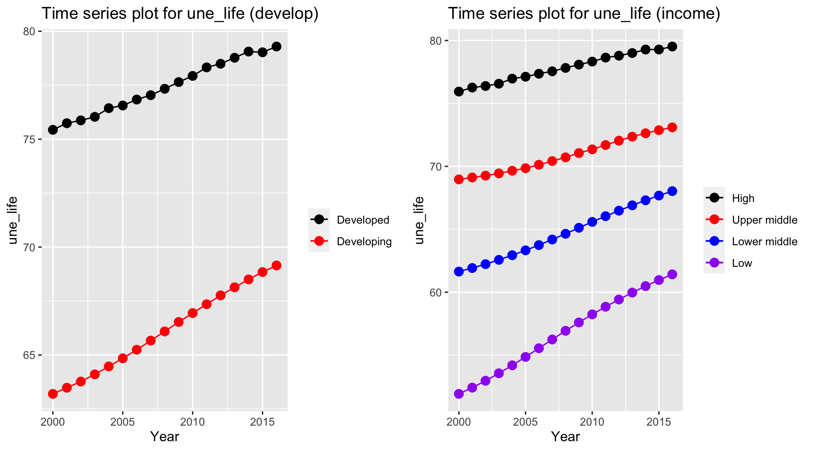
Life expectancy as our dependent variable has similar trends for both developed and developing countries. Two life expectancy indices have a persistent increase over time. However, the expectancy for developed countries is 10 years higher than the developing countries over 16 years. The similar trends also holds for different income groups but countries classified in low income group has a higher growth rate for life expectancy than other groups.
ts1 = Time_series_plot("adult_mortality",merged_data)
ts2 = Time_series_income("adult_mortality",merged_data)
plot_grid(ts1, ts2)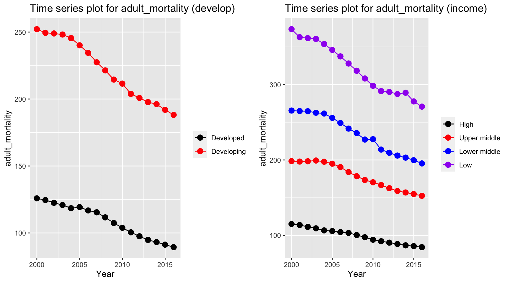
Adult mortality has a similar trend with life expectancy, but in a reversed order. The mortality rate in developing and low income countries decreases with a higher rate than developed and high income countries.
ts1 = Time_series_plot("alcohol",merged_data)
ts2 = Time_series_income("alcohol",merged_data)
plot_grid(ts1, ts2)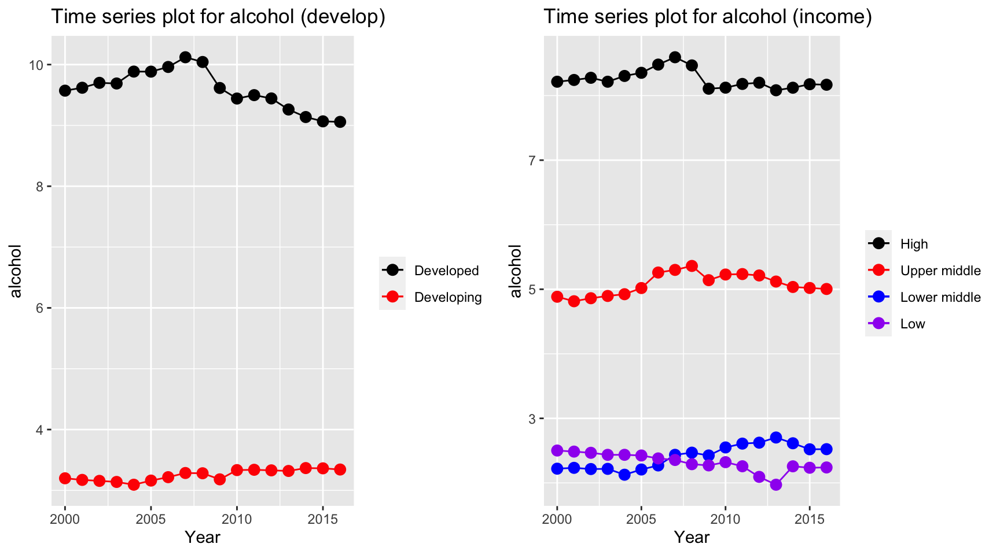
Alcohol seems to have a stable trends for all countries. However, alcohol consuption in developed countries have a much higher value than developing country, and countries classified as high and upper middle income have a higher alcohol consuption value than lower middle and low income, where countries in the latter two two categories have a value of 2 bottles per capita.
ts1 = Time_series_plot("bmi",merged_data)
ts2 = Time_series_income("bmi",merged_data)
plot_grid(ts1, ts2)Over years, bmi for most of countries increases and countries in different categories all increases regardless of development and income group of the country. Interestingly, upper middle income countries exceed the bmi for high income countries, whereas low income countries has a by far lower value than other countries. Also, developing countries has a higher rate of increase as indicated by a steeper line (higher tangent) according to the time series plot.
ts1 = Time_series_plot("measles",merged_data)
ts2 = Time_series_income("measles",merged_data)
plot_grid(ts1, ts2)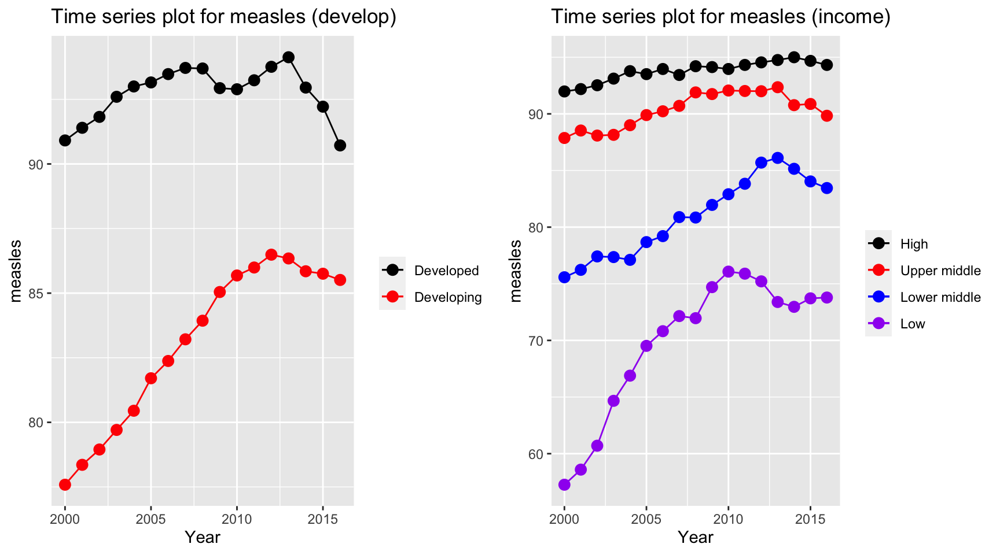
Measles vaccination coverage increases for developing countries and developed countries have a persistently high vaccination coverage. On the other hand, developing countries and low income countries has a soar in vaccination coverage over the time period.
ts1 = Time_series_plot("age5_19obesity",merged_data)
ts2 = Time_series_income("age5_19obesity",merged_data)
plot_grid(ts1, ts2)Although due to the development over time period, the problem obesity worsen and increases over all countries. Upper middle income and developing countries have a higher increase in obesity rate.
ts1 = Time_series_plot("basic_water",merged_data)
ts2 = Time_series_income("basic_water",merged_data)
plot_grid(ts1, ts2)Time series plot for basic water indicates an increase in percentage of people getting basic water over time for developing and lower income countries. On the other hand, high income and developed countries have a constant high basic water coverage.
ts1 = Time_series_plot("doctors",merged_data)
ts2 = Time_series_income("doctors",merged_data)
plot_grid(ts1, ts2)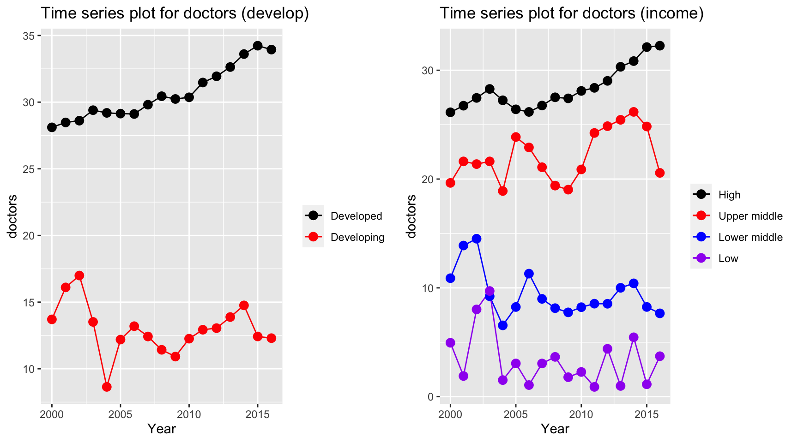
Time series plot for doctors per 10,000 people has interesting trends. Despite the constant increase in high income countries and developed countries, other countries seems to have a fluctuation over the period. There is a sudden decrease in 2004 where SARS explodes. As a result by Magdalena et. al., there are 48.94% of the doctors treated infected patients and 7.4% of the doctors were confirmed infected during the first 6 month period. This could potentially lead to death of doctors in lower middle income, low income and developing countries.
ts1 = Time_series_plot("une_edu_spend",merged_data)
ts2 = Time_series_income("une_edu_spend",merged_data)
plot_grid(ts1, ts2)Education expenditure for all countries varies. High and developed countries have the highest expenditure among all countries over all years.
ts1 = Time_series_plot("une_gni",merged_data)
ts2 = Time_series_income("une_gni",merged_data)
plot_grid(ts1, ts2)The gni is different for developed and developing country over the year. While developing countries have a relative stable curve at 10000 dollar per capita, developed countries increases from 20000 dollar to 40000 dollar per capita. On the other hand, gni per capita for high income countries, which exceeds 40000 dollar per capita in year 2013, have by far the highest value among other countries.
ts1 = Time_series_plot("une_pop",merged_data)
ts2 = Time_series_income("une_pop",merged_data)
plot_grid(ts1, ts2)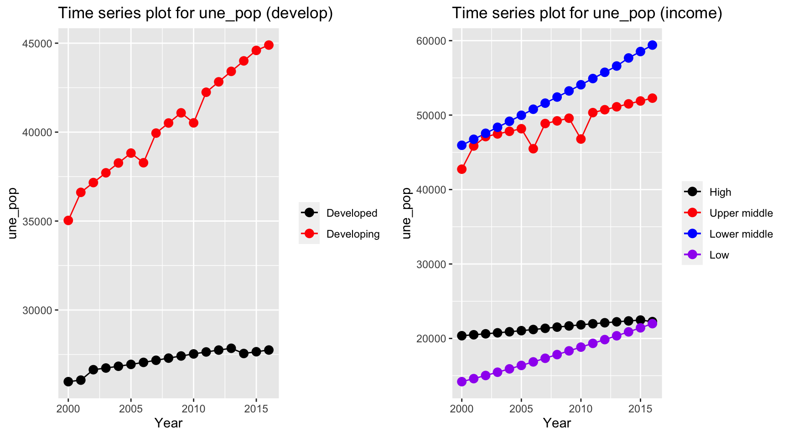 The population in developing countries is much higher than population in developed countries. Interestingly, when we consider the population among different income groups, we can see that lower middle income countries have the highest population, whereas low income countries and high income countries both have value around 20,000,000.
ts1 = Time_series_plot("une_literacy",merged_data)
ts2 = Time_series_income("une_literacy",merged_data)
plot_grid(ts1, ts2)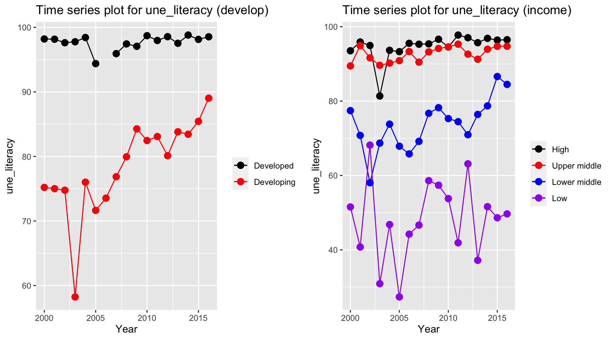 The literacy coverage has some missing value. In particular, all developed countries have a missing value in year 2006. But as indicated in the plots, literacy coverage is higher in developed and high income countries. Additionally, developing countries have an increasing trend in literacy whereas low income countries have a fluctuation but a non increasing or decreasing trend.
ts1 = Time_series_plot("PM_value",merged_data)
ts2 = Time_series_income("PM_value",merged_data)
plot_grid(ts1, ts2)Consider only non-missing data, PM value decreases for high and developed countries. The countries with low and lower middle income have a persistent high PM value over the periods, with approximately 100 percentage of total population exposed to levels exceeding WHO guideline value.
ts1 = Time_series_plot("gghe_d",merged_data)
ts2 = Time_series_income("gghe_d",merged_data)
plot_grid(ts1, ts2)Health expenditure in developed countries soar over the years from 2000 to 2016, from 4% to 5% of total GDP. Developing countries also have an increase in the health expenditure, but with a lower rate. For different income level, high income countries have the highest expenditure on health and it has an increasing trend. However, health expenditure measured in percentage of GDP decreases among low income countries.
Multi-colinearity Check
First, we shall check the multi-colinearity between predictors. This is because multi-colinearity can cause huge swing in coefficient estimates and reduce the precision of estimated coefficients (ref). The correlation heat map is able to help us identify the existence of multi-colinearity among chosen predictors.
mortality_correlation = merged_data %>%
select(adult_mortality, infant_mort, age1_4mort, une_life)
res = cor(mortality_correlation)
corrplot(res, type = "upper", order = "hclust",
tl.col = "black", tl.srt = 45)
The heat map shows that the chosen factors, namely mortality, life_expectancy are very correlated. Mortality is negatively correlated to une life expectancy and it is directly correlated to infant mortality and mortality for children from age 1 to 4. This may because life expectancy is calculated based on mortality rate. Although linear relation can perfectly explain the two relation, it is not a good idea to include such variable as it is directly a variable for calculating life expectancy. Therefore, it is not a good idea to include mortality as our predictor.
disease_correlation = merged_data %>%
select(hepatitis, measles, polio, diphtheria) %>%
na.omit()
res = cor(disease_correlation)
res## hepatitis measles polio diphtheria
## hepatitis 1.0000000 0.6803444 0.6931866 0.7220937
## measles 0.6803444 1.0000000 0.8979004 0.8910589
## polio 0.6931866 0.8979004 1.0000000 0.9573546
## diphtheria 0.7220937 0.8910589 0.9573546 1.0000000corrplot(res, type = "upper", order = "hclust",
tl.col = "black", tl.srt = 45)In our dataset, we have a lot of vaccinations for different diseases. Therefore, it is natural to check whether the vaccinations data are correlated to each other. It seems like they are all very correlated to each other, with correlation value higher than 0.6. In consequence, we decide to only choose vaccinations for measles as our chosen vector as it was one of the most common disease and now almost fully controled by vaccination. There is still some cases remain for the people that did not get vaccinated according to CDC website.
obe_thin_correlation = merged_data %>%
select(age5_19thinness, age5_19obesity,bmi) %>%
na.omit()
res = cor(obe_thin_correlation)
res## age5_19thinness age5_19obesity bmi
## age5_19thinness 1.0000000 -0.5486009 -0.6858195
## age5_19obesity -0.5486009 1.0000000 0.8071426
## bmi -0.6858195 0.8071426 1.0000000corrplot(res, type = "upper", order = "hclust",
tl.col = "black", tl.srt = 45)
BMI, Thinness and obesity are three variables measuring similar characteristics. Ideally, people that are thinner, is less likely to have obesity and a lower bmi value. Therefore, I make corelation heat map and it turns out that the three variables are quite correlated, with a value around -0.55. For the prevention of multi-colinearity, I choose bmi only in our analysis as it is more meaningful. A BMI value greater than 25 is classified as obesity based on BMI Journal and it is one of the problem that exists among people. Cardiomyopathy, for instance, is one of the leading problem due to obesity in recent years by Benoit et. al.. Thus, we want to figure out if bmi can be used to predict life expectancy and whether a high bmi do lead to a decrease in life expectancy.
Correlation and Scatter Plot:
Visualization via scatter plot is a way to further discover the pairwise relation between two chosen variable. By plotting the scatter plot and fitted using best linear line, we can potential obtain the relationship between variables and how well linear trend can explain the data. Since we choose Life expectancy as our response variable, we can plot the scatter plot between life expectancy and other chosen predictors to see the correlation between variables.
# alcohol
merged_data_temp =
merged_data %>%
select(year, une_life, alcohol) %>%
filter(year > 2012)
myplots <- vector('list', 4)
for (i in 2013:2016){
myplots[[i-2012]] =
merged_data_temp %>%
filter(year == i) %>%
ggplot(aes(x = alcohol, y = une_life))+geom_point()+geom_smooth(method = 'lm', se = TRUE, color = 'red')+
labs(title = sprintf("year %s", i))
}
plot_row1 <- plot_grid(myplots[[1]], myplots[[2]])
plot_row2 <- plot_grid(myplots[[3]], myplots[[4]])
# title
title <- ggdraw() +
draw_label(
"Scatter Plot for Life Expectancy and alcohol",
fontface = 'bold',
x = 0,
hjust = 0
) +
theme(
# add margin on the left of the drawing canvas,
# so title is aligned with left edge of first plot
plot.margin = margin(0, 0, 0, 7)
)
plot_grid(title,plot_row1,plot_row2 ,ncol=1, label_size = 12,rel_heights=c(0.1, 1,1))Among four years, the trend of relation between life expectancy and alcohol are similar. Although the line of best fit split points into an evenly two parts, there are more points with low alcohol values. And linear trend may not fully explain such relation.
#bmi
merged_data_temp =
merged_data %>%
select(year, une_life, bmi) %>%
filter(year > 2012)
myplots <- vector('list', 4)
for (i in 2013:2016){
myplots[[i-2012]] =
merged_data_temp %>%
filter(year == i) %>%
ggplot(aes(x = bmi, y = une_life))+geom_point()+geom_smooth(method = 'lm', se = TRUE, color = 'red')+
labs(title = sprintf("year %s", i))
}
plot_row1 <- plot_grid(myplots[[1]], myplots[[2]])
plot_row2 <- plot_grid(myplots[[3]], myplots[[4]])
# title
title <- ggdraw() +
draw_label(
"Scatter Plot for Life Expectancy and bmi",
fontface = 'bold',
x = 0,
hjust = 0
) +
theme(
# add margin on the left of the drawing canvas,
# so title is aligned with left edge of first plot
plot.margin = margin(0, 0, 0, 7)
)
plot_grid(title,plot_row1,plot_row2 ,ncol=1, label_size = 12,rel_heights=c(0.1, 1,1))
Bmi has a positive correlation with life expectancy as shown in the plots, and the points for the four years are almost exactly the same. Linear trend seems to explain the relation well as suggested in the scatter plots. When bmi increases, the life expectancy is likely to have a higher value, although we cannot check the causation in behind.
#measles
merged_data_temp =
merged_data %>%
select(year, une_life, measles) %>%
filter(year > 2012)
myplots <- vector('list', 4)
for (i in 2013:2016){
myplots[[i-2012]] =
merged_data_temp %>%
filter(year == i) %>%
ggplot(aes(x = measles, y = une_life))+geom_point()+geom_smooth(method = 'lm', se = TRUE, color = 'red')+
labs(title = sprintf("year %s", i))
}
plot_row1 <- plot_grid(myplots[[1]], myplots[[2]])
plot_row2 <- plot_grid(myplots[[3]], myplots[[4]])
# title
title <- ggdraw() +
draw_label(
"Scatter Plot for Life Expectancy and measles",
fontface = 'bold',
x = 0,
hjust = 0
) +
theme(
# add margin on the left of the drawing canvas,
# so title is aligned with left edge of first plot
plot.margin = margin(0, 0, 0, 7)
)
plot_grid(title,plot_row1,plot_row2 ,ncol=1, label_size = 12,rel_heights=c(0.1, 1,1))Measle vaccination coverage seems to indicate a high life expectancy when vaccination coverage is high. But such relation may be non linear as there are lots of values clustered in the upper right corner.
#obesity
merged_data_temp =
merged_data %>%
select(year, une_life, age5_19obesity) %>%
filter(year > 2012)
myplots <- vector('list', 4)
for (i in 2013:2016){
myplots[[i-2012]] =
merged_data_temp %>%
filter(year == i) %>%
ggplot(aes(x = age5_19obesity, y = une_life))+geom_point()+geom_smooth(method = 'lm', se = TRUE, color = 'red')+
labs(title = sprintf("year %s", i))
}
plot_row1 <- plot_grid(myplots[[1]], myplots[[2]])
plot_row2 <- plot_grid(myplots[[3]], myplots[[4]])
# title
title <- ggdraw() +
draw_label(
"Scatter Plot for Life Expectancy and obesity among age 5-19",
fontface = 'bold',
x = 0,
hjust = 0
) +
theme(
# add margin on the left of the drawing canvas,
# so title is aligned with left edge of first plot
plot.margin = margin(0, 0, 0, 7)
)
plot_grid(title,plot_row1,plot_row2 ,ncol=1, label_size = 12,rel_heights=c(0.1, 1,1))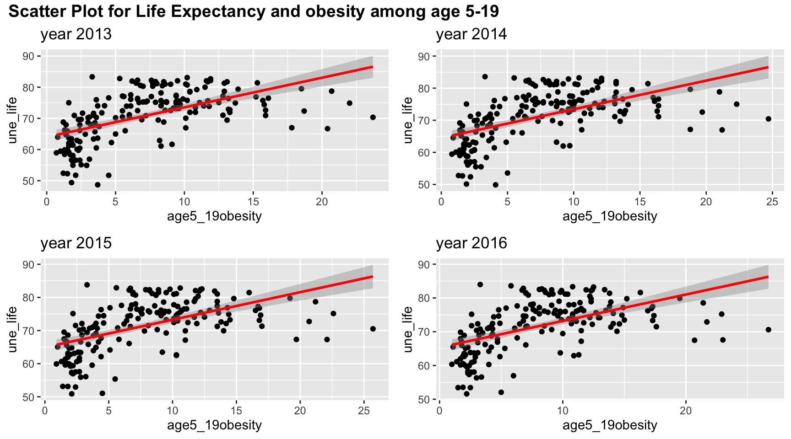
Although linear trend works well in the scatter plot between obesity and life expectancy, the points suggests a non-linear, perhaps a quadratic trends, in the graph. There is clearly a “r” shape pattern in the graph. Similar to other plots, the four years have almost the same scatter plot.
#basic_water
merged_data_temp =
merged_data %>%
select(year, une_life, basic_water) %>%
filter(year > 2012)
myplots <- vector('list', 4)
for (i in 2013:2016){
myplots[[i-2012]] =
merged_data_temp %>%
filter(year == i) %>%
ggplot(aes(x = basic_water, y = une_life))+geom_point()+geom_smooth(method = 'lm', se = TRUE, color = 'red')+
labs(title = sprintf("year %s", i))
}
plot_row1 <- plot_grid(myplots[[1]], myplots[[2]])
plot_row2 <- plot_grid(myplots[[3]], myplots[[4]])
# title
title <- ggdraw() +
draw_label(
"Scatter Plot for Life Expectancy and percentag of people access to basic water ",
fontface = 'bold',
x = 0,
hjust = 0
) +
theme(
# add margin on the left of the drawing canvas,
# so title is aligned with left edge of first plot
plot.margin = margin(0, 0, 0, 7)
)
plot_grid(title,plot_row1,plot_row2 ,ncol=1, label_size = 12,rel_heights=c(0.1, 1,1))
Linear trends fit the relation between Life Expectancy and percentag of people access to basic water well. There is clearly an upward increasing trend.
# doctors
merged_data_temp =
merged_data %>%
select(year, une_life, doctors) %>%
filter(year > 2012)
myplots <- vector('list', 4)
for (i in 2013:2016){
myplots[[i-2012]] =
merged_data_temp %>%
filter(year == i) %>%
ggplot(aes(x = doctors, y = une_life))+geom_point()+geom_smooth(method = 'lm', se = TRUE, color = 'red')+
labs(title = sprintf("year %s", i))
}
plot_row1 <- plot_grid(myplots[[1]], myplots[[2]])
plot_row2 <- plot_grid(myplots[[3]], myplots[[4]])
# title
title <- ggdraw() +
draw_label(
"Scatter Plot for Life Expectancy and doctors",
fontface = 'bold',
x = 0,
hjust = 0
) +
theme(
# add margin on the left of the drawing canvas,
# so title is aligned with left edge of first plot
plot.margin = margin(0, 0, 0, 7)
)
plot_grid(title,plot_row1,plot_row2 ,ncol=1, label_size = 12,rel_heights=c(0.1, 1,1))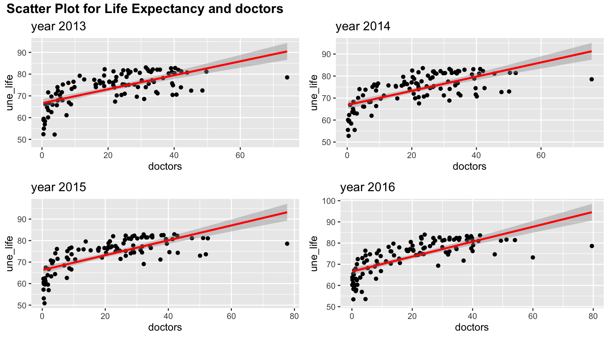
Similar to obesity, the graph has a “r” pattern and thus, there exist a non linear correlation. Thus, linear relation may not be accurate to explain the association. However, the linear trend do include most of the information, so it might be sufficient to just use linear relation. We will check it further in later analysis.
#une_edu_spend
merged_data_temp =
merged_data %>%
select(year, une_life, une_edu_spend) %>%
filter(year > 2012)
myplots <- vector('list', 4)
for (i in 2013:2016){
myplots[[i-2012]] =
merged_data_temp %>%
filter(year == i) %>%
ggplot(aes(x = une_edu_spend, y = une_life))+geom_point()+geom_smooth(method = 'lm', se = TRUE, color = 'red')+
labs(title = sprintf("year %s", i))
}
plot_row1 <- plot_grid(myplots[[1]], myplots[[2]])
plot_row2 <- plot_grid(myplots[[3]], myplots[[4]])
# title
title <- ggdraw() +
draw_label(
"Scatter Plot for Life Expectancy and education expenditure",
fontface = 'bold',
x = 0,
hjust = 0
) +
theme(
# add margin on the left of the drawing canvas,
# so title is aligned with left edge of first plot
plot.margin = margin(0, 0, 0, 7)
)
plot_grid(title,plot_row1,plot_row2 ,ncol=1, label_size = 12,rel_heights=c(0.1, 1,1))The expenditure also suggest a linear increasing trend for all years. Year 2015 seems to have an outlier with a very high education expenditure. Otherwise, the pattern is similar for the four years. The scatter plot is quite spread out, so there may be some indication of non linear trend but we cannot conclude from the scatter plot.
# une_gni
merged_data_temp =
merged_data %>%
select(year, une_life, une_gni) %>%
filter(year > 2012)
myplots <- vector('list', 4)
for (i in 2013:2016){
myplots[[i-2012]] =
merged_data_temp %>%
filter(year == i) %>%
ggplot(aes(x = une_gni, y = une_life))+geom_point()+geom_smooth(method = 'lm', se = TRUE, color = 'red')+
labs(title = sprintf("year %s", i))
}
plot_row1 <- plot_grid(myplots[[1]], myplots[[2]])
plot_row2 <- plot_grid(myplots[[3]], myplots[[4]])
# title
title <- ggdraw() +
draw_label(
"Scatter Plot for Life Expectancy and GNI per capita",
fontface = 'bold',
x = 0,
hjust = 0
) +
theme(
# add margin on the left of the drawing canvas,
# so title is aligned with left edge of first plot
plot.margin = margin(0, 0, 0, 7)
)
plot_grid(title,plot_row1,plot_row2 ,ncol=1, label_size = 12,rel_heights=c(0.1, 1,1))The association between life expectancy and GNI per capita also shows a non-linear correlation with a “r” patter. Therefore, non-linear correlation analysis may be needed.
#une_pop
merged_data_temp =
merged_data %>%
select(year, une_life, une_pop) %>%
filter(year > 2012)
myplots <- vector('list', 4)
for (i in 2013:2016){
myplots[[i-2012]] =
merged_data_temp %>%
filter(year == i) %>%
ggplot(aes(x = une_pop, y = une_life))+geom_point()+geom_smooth(method = 'lm', se = TRUE, color = 'red')+
labs(title = sprintf("year %s", i))
}
plot_row1 <- plot_grid(myplots[[1]], myplots[[2]])
plot_row2 <- plot_grid(myplots[[3]], myplots[[4]])
# title
title <- ggdraw() +
draw_label(
"Scatter Plot for Life Expectancy and Population",
fontface = 'bold',
x = 0,
hjust = 0
) +
theme(
# add margin on the left of the drawing canvas,
# so title is aligned with left edge of first plot
plot.margin = margin(0, 0, 0, 7)
)
plot_grid(title,plot_row1,plot_row2 ,ncol=1, label_size = 12,rel_heights=c(0.1, 1,1))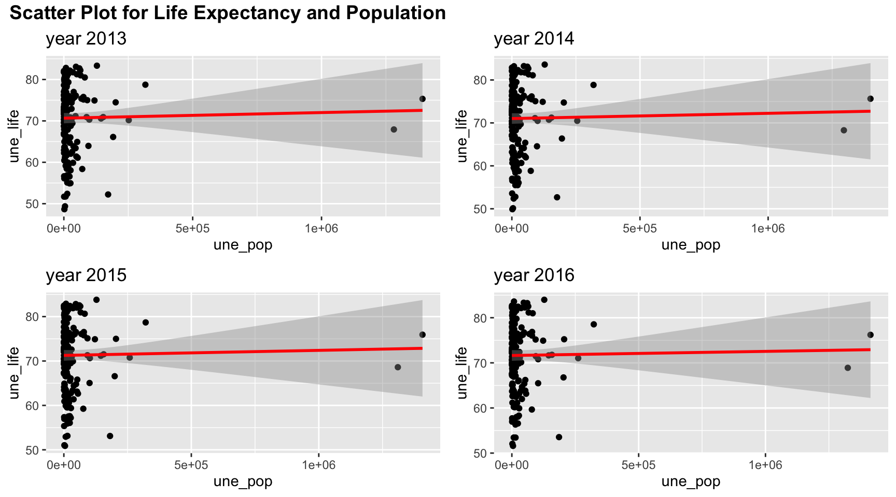
As seen in the scatter plot, population is not very correlated to life expectancy and the data are very focused on low population. A linear relation is not quite appropriate here.
#une_literacy
merged_data_temp =
merged_data %>%
select(year, une_life, une_literacy) %>%
filter(year > 2012)
myplots <- vector('list', 4)
for (i in 2013:2016){
myplots[[i-2012]] =
merged_data_temp %>%
filter(year == i) %>%
ggplot(aes(x = une_literacy, y = une_life))+geom_point()+geom_smooth(method = 'lm', se = TRUE, color = 'red')+
labs(title = sprintf("year %s", i))
}
plot_row1 <- plot_grid(myplots[[1]], myplots[[2]])
plot_row2 <- plot_grid(myplots[[3]], myplots[[4]])
# title
title <- ggdraw() +
draw_label(
"Scatter Plot for Life Expectancy and Literacy Coverage",
fontface = 'bold',
x = 0,
hjust = 0
) +
theme(
# add margin on the left of the drawing canvas,
# so title is aligned with left edge of first plot
plot.margin = margin(0, 0, 0, 7)
)
plot_grid(title,plot_row1,plot_row2 ,ncol=1, label_size = 12,rel_heights=c(0.1, 1,1))
Due to the missing values, literacy coverage does not have a lot of details. But linear trend do explain the over all association between life expectancy and percentage of people who are able to write and speak a language.
# PM_value
merged_data_temp =
merged_data %>%
select(year, une_life, PM_value) %>%
filter(year > 2012)
myplots <- vector('list', 4)
for (i in 2013:2016){
myplots[[i-2012]] =
merged_data_temp %>%
filter(year == i) %>%
ggplot(aes(x = PM_value, y = une_life))+geom_point()+geom_smooth(method = 'lm', se = TRUE, color = 'red')+
labs(title = sprintf("year %s", i))
}
plot_row1 <- plot_grid(myplots[[1]], myplots[[2]])
plot_row2 <- plot_grid(myplots[[3]], myplots[[4]])
# title
title <- ggdraw() +
draw_label(
"Scatter Plot for Life Expectancy and percentage of people exposed to abnormal PM level",
fontface = 'bold',
x = 0,
hjust = 0
) +
theme(
# add margin on the left of the drawing canvas,
# so title is aligned with left edge of first plot
plot.margin = margin(0, 0, 0, 7)
)
plot_grid(title,plot_row1,plot_row2 ,ncol=1, label_size = 12,rel_heights=c(0.1, 1,1))Since most of people are exposed to abnormal PM level, most of the PM value is clustered at 100. Linear relation may be sufficient to explain lower PM values but it may be difficult to include all the information for high PM value.
#gghe_d
merged_data_temp =
merged_data %>%
select(year, une_life, gghe_d) %>%
filter(year > 2012)
myplots <- vector('list', 4)
for (i in 2013:2016){
myplots[[i-2012]] =
merged_data_temp %>%
filter(year == i) %>%
ggplot(aes(x = gghe_d, y = une_life))+geom_point()+geom_smooth(method = 'lm', se = TRUE, color = 'red')+
labs(title = sprintf("year %s", i))
}
plot_row1 <- plot_grid(myplots[[1]], myplots[[2]])
plot_row2 <- plot_grid(myplots[[3]], myplots[[4]])
# title
title <- ggdraw() +
draw_label(
"Scatter Plot for Life Expectancy and Health expenditure",
fontface = 'bold',
x = 0,
hjust = 0
) +
theme(
# add margin on the left of the drawing canvas,
# so title is aligned with left edge of first plot
plot.margin = margin(0, 0, 0, 7)
)
plot_grid(title,plot_row1,plot_row2 ,ncol=1, label_size = 12,rel_heights=c(0.1, 1,1))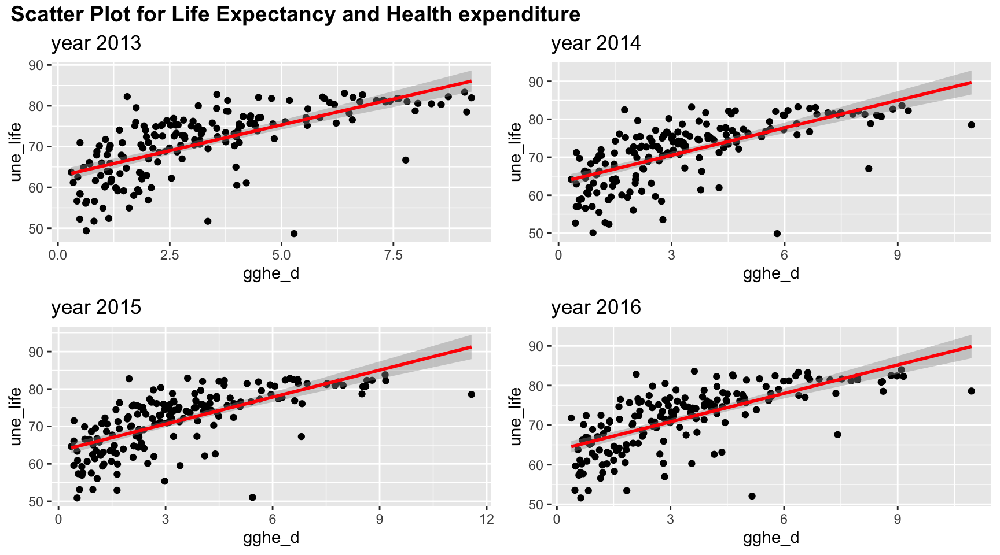
Health expenditure is positively correlated with life expectancy. However, there may be non linear trend as there is a curve bending at health expenditure = 3% of GDP.
Correlation
Although scatter plot gives us some visualization of correlation between variables, we can not know to what extend the two variables are correlated. Therefore, correlation, as a numeric value, is of a great help to resolve the problem. The correlation value gives us a value that indicates how correlated two variables are using Pearson method or distance methods.
Pearson Correlation
Theory
Pearson correlation is a common EDA method that measures the strength of the linear relation between two variables paper. It has the formula defined in following definition:
Definition Pearson
Let x and y be two random variables with zero mean and \(x,y\in \mathbb R\), the pearson correlation coefficient is defined as:
\[ \rho (x,y) = \frac{cov(x,y)}{\sigma_x\sigma_y} \]
where \(\sigma_x=\sqrt{var(x)}\) and \(\sigma_y=\sqrt{var(y)}\).
The coefficient as a value between \(-1\leq\rho(x,y)\leq1\). If the coefficient is zero, then x and y does not have correlation at all. If the coefficient is closer to a value of +1 or -1, then the correlation between the two variable is stronger. A +1 coefficient means the two variables have a perfect positive correlation whereas a -1 value means the two variables have a perfect negative correlation.
#### Results
Over the time:
Pearson_Correlation = function(varnum, merged_data){
correlation_result = tibble("date"=2000:2016, "Pearson_cor"=0,"Pearson_pval"=0)
for (t in 2000:2016){
merged_data_temp =
merged_data %>%
filter(year==t)
correlation_result$Pearson_cor[t-1999] =
round(cor(merged_data_temp[,varnum], merged_data_temp$une_life, method = "pearson",use = "complete.obs")[1],2)
correlation_result$Pearson_pval[t-1999] =
round(cor.test(merged_data_temp[,varnum][[1]], merged_data_temp$une_life, method = "pearson",use = "complete.obs")$p.value,2)
}
return(correlation_result)
}
#Pearson_Correlation(6,merged_data)
Pearson_Correlation_result = tibble("date"=2000:2016)
colname = colnames(merged_data)
Pearson_Corr_res =
Pearson_Correlation_result %>%
mutate(mortality = Pearson_Correlation(8,merged_data)$Pearson_cor,
alcohol = Pearson_Correlation(11,merged_data)$Pearson_cor,
bmi = Pearson_Correlation(12,merged_data)$Pearson_cor,
obesity = Pearson_Correlation(14,merged_data)$Pearson_cor,
measles = Pearson_Correlation(16,merged_data)$Pearson_cor,
water = Pearson_Correlation(19,merged_data)$Pearson_cor,
doctors = Pearson_Correlation(20,merged_data)$Pearson_cor,
)
Pearson_Corr_res2 =
Pearson_Correlation_result %>%
mutate(edu_expenditure = Pearson_Correlation(31,merged_data)$Pearson_cor,
gni_capita = Pearson_Correlation(29,merged_data)$Pearson_cor,
population = Pearson_Correlation(25,merged_data)$Pearson_cor,
literacy = Pearson_Correlation(32,merged_data)$Pearson_cor,
#PM_value = Pearson_Correlation(34,merged_data)$Pearson_cor,
health_expenditure = Pearson_Correlation(23,merged_data)$Pearson_cor)
Pearson_Corr_pval =
Pearson_Correlation_result %>%
mutate(mortality = Pearson_Correlation(8,merged_data)$Pearson_pval,
alcohol = Pearson_Correlation(11,merged_data)$Pearson_pval,
bmi = Pearson_Correlation(12,merged_data)$Pearson_pval,
obesity = Pearson_Correlation(14,merged_data)$Pearson_pval,
measles = Pearson_Correlation(16,merged_data)$Pearson_pval,
water = Pearson_Correlation(19,merged_data)$Pearson_pval,
doctors = Pearson_Correlation(20,merged_data)$Pearson_pval,
edu_expenditure = Pearson_Correlation(31,merged_data)$Pearson_pval,
gni_capita = Pearson_Correlation(29,merged_data)$Pearson_pval,
population = Pearson_Correlation(25,merged_data)$Pearson_pval,
literacy = Pearson_Correlation(32,merged_data)$Pearson_pval,
#PM_value = Pearson_Correlation(34,merged_data)$Pearson_pval,
health_expenditure = Pearson_Correlation(23,merged_data)$Pearson_pval
)
grid.table(Pearson_Corr_res)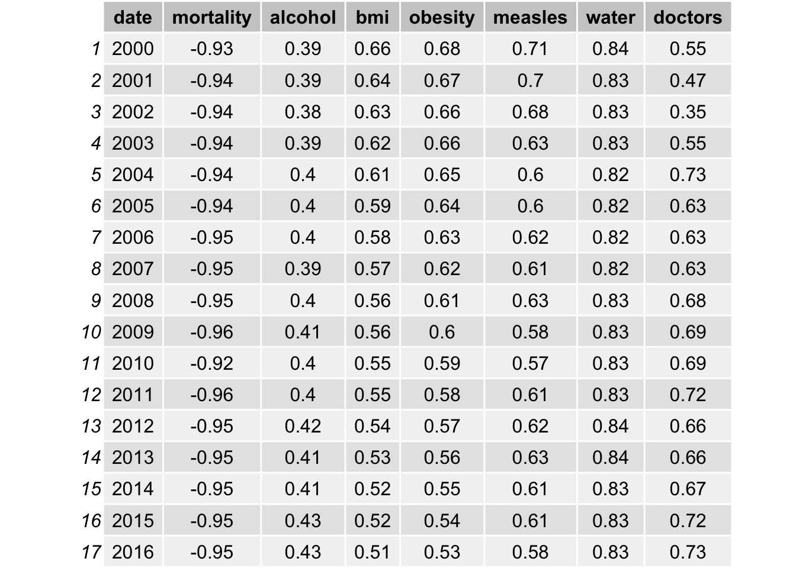
grid.table(Pearson_Corr_res2)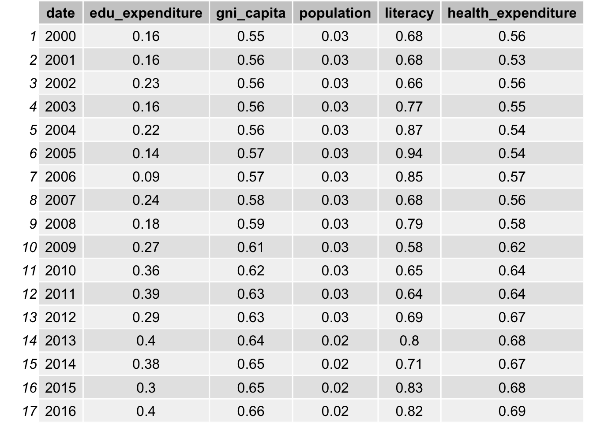
As indicated in the table, bmi, obesity, measles vaccination, gni per capita and health expenditure all have a high correlation with life expectancy, with a value close to 0.6. The correlation with water access and literacy is even higher, over 0.8 for all years. As discussed, life expectancy is calculated from mortality and therefore it has a really high correlation. We will not include such data. On the other hand, population is not likely to be correlated with life expectancy, as the correlations are all approximately 0.03.
Distance Correlation
Theory
Although Pearson Correlation may be sufficient to explore the association between variables and life expectancy, there is some non-linear trends exist between variables, such as obesity, GNI per capita, doctors, health expenditure, and life expectancy. Therefore, it is necessary to use a non-linear method to account for such scenarios.
Distance correlation is a novel developed technique to discover the joint dependence of random variables developed by Székely et al. Unlike Pearson correlation, such Pairwise distance correlation is a distance method and therefore it can take into consideration of the non-linear relationship between two random variables, namely \(X\in \mathbb{R}^p\) and \(Y\in \mathbb{R}^q\) that can have arbitrary dimensions (p and q can be non-equal) to some extend. The correlation between two variables is said to be independent of distance correlation \(\mathcal{R}(X,Y)=0\).
Denote the scalar product of two vectors \(a\) and \(b\) as <\(a,b\)> and conjugate of complex function f as \(f\). Also define norm \(|x|_p\) as Euclidean norm for \(x\in\mathbb{R}^p\)
Definition 1
In weighted \(l_2\) space, the \(||\cdot||_w\)-norm for any complex function \(\zeta \in \mathbb{R}^p\times\mathbb{R}^q\) is defined by: \[ \begin{equation} ||\zeta( a, b )||^2 _w =\int_{\mathbb{R}^{p+q}}|\zeta( a, b)|^2 w( a, b)\,d a\, d b \end{equation} \] where \(w(a,b)\) can be any arbitrary positive weighting function as long as the integral is well-defined.
Definition 2
Define the measure of dependence as: \[ \begin{equation} V^2(X,Y;w) = ||f_{X,Y}(a,b)-f_X(a)f_Y(b)||^2_w= \int_{\mathbb{R}^{p+q}}|f_{X,Y}(a,b)-f_X(a)f_Y(b)|^2 w( a, b)\,d a\, d b \end{equation} \]
Proof
The criterion of independent means that for vectors \(a\), \(b\), the probability density function \(f_X(a)\), \(f_Y(b)\) and their joint probability density function \(f_{X,Y}(a,b)\) satisfies \(f_{X,Y}(a,b)=f_X(a)f_Y(b)\). Therefore, I have \(V^2(X,Y;w)=||0||^2_w=0\) if they are independent hence the equation satisfy the condition that \(V^2=0\) only if variables are independent. (see paper)
The choice of weighting function must satisfy invariance under transformations of random variables up to multiplication of a positive constant \(\epsilon\): \((X,Y)\rightarrow (\epsilon X, \epsilon Y)\) and positiveness for any dependent variables. By the work of Szekely et. al., only non-integrable functions satisfy the condition for weight function. In order to specify the formula, I need the following lemma
Lemma 1
For all x in \(\mathbb{R}^d\): \[ \begin{equation} \int_{\mathbb{R}^d}\frac{1-cos<y,x> }{|y|^{d+1}_{d}}dy=c_d|x|=\frac{\pi ^{(1+d/2)}}{2 \Gamma ((d+1)/2)}|x| \end{equation} \] where \(\Gamma(\cdot)\) is the gamma function. This is proved by Szekely et. al.
Now I can choose weight function as following: \[ \begin{equation} w(a,b) = (c_p c_q |a| ^{1+p}_p |b| ^{1+q}_q )^{-1} \end{equation} \]
By using such weight function and lemma 3.1, the definition of distance covariance will be well-defined. Note by the weight, I have \(dw = (c_p c_q |a| ^{1+p}_p |b| ^{1+q}_q )^{-1}dadb\). This is proven in the following definition. \
Deinition 4
Define the distance covariance (dCov) for random vectors \(X\) and \(Y\) with finite expectation as the following non-negative figure: \[ \begin{equation} V^2(X,Y) = ||f_{X,Y} (a,b)- f_X(a)f_Y (b)||^2 = \frac{1}{c_pc_q}\int_{\mathbb{R}^{p+q}}\frac{|f_{X,Y} (a,b) - f_X(a)f_Y (b)|^2}{|a|^{1+p}_p|b|^{1+q}_q}da db \end{equation} \] where \(a\in \mathbb{R}^p\), \(b\in \mathbb{R}^q\) are two vectors that \(a\in X\) and \(b\in Y\)
Different to the Pearson method, the distance correlation have a non-negative value as it is a distance method. Therefore, although we have a better ability to measure non-linear correlation, we cannot identify the direction of the correlation. In other word, we cannot tell whether the correlation is positively correlated or negatively correlated.
Result
Distance_Correlation = function(varnum, merged_data){
correlation_result = tibble("date"=2000:2016, "Distance_cor"=0,"Distance_pval"=0)
for (t in 2000:2016){
merged_data_temp =
merged_data %>%
filter(year==t) %>%
select(27,varnum) %>%
na.omit()
correlation_result$Distance_cor[t-1999] =
round(dcor(merged_data_temp[,2], merged_data_temp$une_life,)[1],2)
correlation_result$Distance_pval[t-1999] =
round(dcor.test(merged_data_temp[,2][[1]], merged_data_temp$une_life,R=1000)$p.value,2)
}
return(correlation_result)
}
Distance_Correlation_result = tibble("date"=2000:2016)
colname = colnames(merged_data)
result_corr =
Distance_Correlation_result %>%
mutate(mortality = Distance_Correlation(8,merged_data)$Distance_cor,
alcohol = Distance_Correlation(11,merged_data)$Distance_cor,
bmi = Distance_Correlation(12,merged_data)$Distance_cor,
obesity = Distance_Correlation(14,merged_data)$Distance_cor,
measles = Distance_Correlation(16,merged_data)$Distance_cor,
water = Distance_Correlation(19,merged_data)$Distance_cor,
doctors = Distance_Correlation(20,merged_data)$Distance_cor,
)
result_corr2 =
Distance_Correlation_result %>%
mutate(edu_expenditure = Distance_Correlation(31,merged_data)$Distance_cor,
gni_capita = Distance_Correlation(29,merged_data)$Distance_cor,
population = Distance_Correlation(25,merged_data)$Distance_cor,
literacy = Distance_Correlation(32,merged_data)$Distance_cor,
#PM_value = Distance_Correlation(34,merged_data)$Distance_cor,
health_expenditure = Distance_Correlation(23,merged_data)$Distance_cor)
result_pval =
Distance_Correlation_result %>%
mutate(mortality = Distance_Correlation(8,merged_data)$Distance_pval,
alcohol = Distance_Correlation(11,merged_data)$Distance_pval,
bmi = Distance_Correlation(12,merged_data)$Distance_pval,
obesity = Distance_Correlation(14,merged_data)$Distance_pval,
measles = Distance_Correlation(16,merged_data)$Distance_pval,
water = Distance_Correlation(19,merged_data)$Distance_pval,
doctors = Distance_Correlation(20,merged_data)$Distance_pval,
edu_expenditure = Distance_Correlation(31,merged_data)$Distance_pval,
gni_capita = Distance_Correlation(29,merged_data)$Distance_pval,
population = Distance_Correlation(25,merged_data)$Distance_pval,
literacy = Distance_Correlation(32,merged_data)$Distance_pval,
#PM_value = Distance_Correlation(34,merged_data)$Distance_pval,
health_expenditure = Distance_Correlation(23,merged_data)$Distance_pval
)
grid.table(result_corr)
grid.table(result_corr2)After take in consideration of non-linear trend, bmi, obesity, education expenditure, gni per capita has an average of approximately 0.07 increase in the correlation. Population also increases from 0.03 to 0.1. Such increase is not significant because high correlation values are still highly correlated. Therefore, it provides some evidence that linear model may be sufficient to use in our data analysis.
Statistical Analysis
1. Life Expectation by Regions
data %>%
janitor::clean_names() %>%
group_by(region) %>%
summarise(avg_by_region = mean(une_life,na.rm = T)) %>%
arrange(avg_by_region) %>%
knitr::kable(digits = 3)| region | avg_by_region |
|---|---|
| Africa | 57.070 |
| South-East Asia | 68.754 |
| Eastern Mediterranean | 70.070 |
| Western Pacific | 71.604 |
| Americas | 73.347 |
| Europe | 75.700 |
The table shows the arranged average life expectancy of each region from 2000 to 2016.
The range of average life expectancy among regions is about 8 years.
Europe has the highest average life expectancy while Africa has the lowest.
data %>%
janitor::clean_names() %>%
group_by(region) %>%
ggplot(aes(x = fct_reorder(region,une_life), y = une_life, fill = region)) +
geom_boxplot() +
labs(title = "Boxplot of Life Expectancy by Regions") +
xlab("Region") +
ylab("Life Expectancy") +
theme(axis.text.x = element_text(hjust = 1, angle = 10,size = 8))The boxplot shows the distribution of life expectancy in each region.
The variance of life expectancy is higher in Eastern Mediterranean and Africa.
The Americas has many outliers with low life expectancy
We can roughly tell from the plot that the variances of life expectancy among regions are not equal. Thus, we may perform a statistical test to check heteroscedasticity
test of equal variances
\[H_0: Equal\ \ variance \ \ among\ \ regions \ \text { vs } \ H_1: Unequal\ \ variance \]
bartlett.test(une_life ~ factor(region),data = data) %>%
broom::tidy() %>%
knitr::kable()| statistic | p.value | parameter | method |
|---|---|---|---|
| 318.8595 | 0 | 5 | Bartlett test of homogeneity of variances |
The null hypothesis for Bartlett test is that the variances are equal. The result shows that the p-value is less than 0.05. Thus, we may reject the null and conclude that the variances of life expectancy among different regions is not equal. Consequently, we cannot perform ANOVA to test the difference of mean life expectancy in all the six regions. We should perform t.test between two selected regions separately.
2. t.test : Compare Mean Life Expectancy Between Americas and Europe
From the boxplot above, we find that the life expectancy in Americas and Europe distribute almost in the same interval. Though the median of Europe is higher, the variance in Americas seems smaller. Thus, we want to study if the mean life expectancy in the two regions are significantly different.
extract life expectancy in Americas and Europe
Americas <- data %>%
janitor::clean_names() %>%
filter(region == "Americas") %>%
pull(une_life)
Europe <- data %>%
janitor::clean_names() %>%
filter(region == "Europe") %>%
pull(une_life) In order to decide on which type of t.test we should perform, we need to compare the variance in Americas and Europe first.
We can roughly tell from the boxplot that Americas has a smaller variance. But there also exist many outliers with low life expectancy values in Americas. Thus, we turn to statistical test to decide on the relationship.
test equal variance
\[H_0: \sigma^2_{Americas} =\ \sigma^2_{Europe}\ \text { vs } \ H_1: \sigma^2_{Americas} \neq\ \sigma^2_{Europe} \]
var.test(Americas,Europe,alternative = "two.sided",conf.level = 0.95) %>%
broom::tidy() %>%
knitr::kable()## Multiple parameters; naming those columns num.df, den.df| estimate | num.df | den.df | statistic | p.value | conf.low | conf.high | method | alternative |
|---|---|---|---|---|---|---|---|---|
| 0.7259117 | 560 | 849 | 0.7259117 | 4.12e-05 | 0.6248981 | 0.8452553 | F test to compare two variances | two.sided |
The null hypothesis for the variance test is that the two variance are equal. The result shows that the p-value is much less than 0.05. Thus, we may reject the null hypothesis and conclude that the variances are not equal. Next, we should perform 2 sample t.test with unknown and unequal variance.
2 sample t.test with unknown unequal variances
\[H_0: \text{mean life_exp}_{Americas} = \ \text{mean life_exp}_{Europe}\ \text { vs } \ H_1: \text{mean life_exp}_{Americas} \neq \text{mean life_exp}_{Europe} \]
t.test(Americas,Europe,alternative = "less",conf.level = 0.95,paired = F,var.equal = FALSE ) %>%
broom::tidy() %>%
knitr::kable()| estimate | estimate1 | estimate2 | statistic | p.value | parameter | conf.low | conf.high | method | alternative |
|---|---|---|---|---|---|---|---|---|---|
| -2.352754 | 73.34729 | 75.70004 | -9.837228 | 0 | 1320.964 | -Inf | -1.959081 | Welch Two Sample t-test | less |
The null hypothesis for the t.test is that the two variance are equal. The result shows that the p-value is much less than 0.05. Thus, we may reject the null hypothesis and conclude that the mean of life expectancy in Americas and Europe are different. Since the test statistics is negative, we know that mean life expectancy in Americas is smaller than Europe.
3. prop.test : Compare the Proportion of Life Expectancy Over 70 Between Western Pacific and South-East Asia
We can tell from the boxplot above that the boxes of Western Pacific and South-East Asia are almost overlapping. The majority of them seem to be over 65 years. Thus we are interested in comparing the proportion of life expectancy over 65 year in the two regions.
\[H_0: \text{Proportion}_{Western\ Pacific} = \ \text{Proportion}_{South-East\ Asia}\ \text { vs } \ H_1: \text{mean life_exp}_{Western\ Pacific} \neq \text{mean life_exp}_{South-East\ Asia} \]
data %>%
janitor::clean_names() %>%
filter(region == "Western Pacific") %>%
summarise(above_65 = sum(une_life > 65),
total = n()) %>%
knitr::kable()| above_65 | total |
|---|---|
| 304 | 357 |
data %>%
janitor::clean_names() %>%
filter(region == "South-East Asia") %>%
summarise(above_65 = sum(une_life > 65),
total = n()) %>%
knitr::kable()| above_65 | total |
|---|---|
| 149 | 187 |
prop.test(c(304,149),n = c(357,187),correct = F) %>%
broom::tidy() %>%
knitr::kable()| estimate1 | estimate2 | statistic | p.value | parameter | conf.low | conf.high | method | alternative |
|---|---|---|---|---|---|---|---|---|
| 0.8515406 | 0.7967914 | 2.640731 | 0.1041556 | 1 | -0.0137086 | 0.1232069 | 2-sample test for equality of proportions without continuity correction | two.sided |
The null hypothesis for the prop.test is that the two proportions are equal. The result shows that the p-value is approximately 0.104. Thus, under the significance level of 0.05, we fail to reject the null. We have evidence that the proportion of life expectancy above 65 in Western Pacific is the same as in South-East Asia.
4. Average Life Expectancy by (region, year) Combination
data %>%
janitor::clean_names() %>%
group_by(region,year) %>%
summarise(avg_by_year_region = mean(une_life,na.rm = T)) %>%
pivot_wider(
names_from = region,
values_from = avg_by_year_region
) %>%
knitr::kable(digits = 3)| year | Africa | Americas | Eastern Mediterranean | Europe | South-East Asia | Western Pacific |
|---|---|---|---|---|---|---|
| 2000 | 52.816 | 71.661 | 68.080 | 73.602 | 64.851 | 69.400 |
| 2001 | 53.040 | 71.900 | 68.350 | 73.923 | 65.463 | 69.706 |
| 2002 | 53.294 | 72.129 | 68.619 | 74.072 | 66.068 | 69.995 |
| 2003 | 53.681 | 72.354 | 68.889 | 74.252 | 66.644 | 70.304 |
| 2004 | 54.192 | 72.580 | 69.159 | 74.642 | 67.181 | 70.611 |
| 2005 | 54.744 | 72.789 | 69.425 | 74.784 | 67.677 | 70.899 |
| 2006 | 55.385 | 72.994 | 69.684 | 75.063 | 68.134 | 71.175 |
| 2007 | 56.106 | 73.201 | 69.930 | 75.287 | 68.566 | 71.439 |
| 2008 | 56.840 | 73.395 | 70.161 | 75.613 | 68.983 | 71.692 |
| 2009 | 57.594 | 73.601 | 70.378 | 75.957 | 69.388 | 71.970 |
| 2010 | 58.343 | 73.796 | 70.585 | 76.255 | 69.780 | 72.185 |
| 2011 | 59.065 | 73.985 | 70.788 | 76.672 | 70.161 | 72.409 |
| 2012 | 59.807 | 74.170 | 70.993 | 76.863 | 70.526 | 72.657 |
| 2013 | 60.445 | 74.343 | 71.203 | 77.166 | 70.873 | 72.892 |
| 2014 | 61.062 | 74.512 | 71.420 | 77.483 | 71.204 | 73.113 |
| 2015 | 61.641 | 74.669 | 71.645 | 77.493 | 71.516 | 73.316 |
| 2016 | 62.131 | 74.826 | 71.875 | 77.773 | 71.809 | 73.504 |
data %>%
janitor::clean_names() %>%
group_by(region,year) %>%
summarise(avg_by_year_region = mean(une_life,na.rm = T)) %>%
ggplot(aes(x = year, y = avg_by_year_region, color = region)) +
geom_line() + geom_point() + labs(title = "Average Life Expectancy by Region, Year") + ylab ("Average Life Expectancy")- The table and line graph above show the descriptive statistics and overall trend.
- It is clearly shown in the plot that Africa has a much lower life expectancy than the other regions.
5. Life Expectancy by Income Level
data %>%
janitor::clean_names() %>%
filter(!is.na(income_group)) %>%
group_by(income_group) %>%
summarise(avg_by_income = mean(une_life,na.rm = T)) %>%
arrange(avg_by_income) %>%
knitr::kable(digits = 3)| income_group | avg_by_income |
|---|---|
| Low income | 56.798 |
| Lower middle income | 64.725 |
| Upper middle income | 70.861 |
| High income | 77.818 |
data %>%
janitor::clean_names() %>%
filter(!is.na(income_group)) %>%
group_by(income_group) %>%
ggplot(aes(x = fct_reorder(income_group,une_life), y = une_life,fill = income_group)) +
geom_boxplot() +
labs(title = "Boxplot of Life Expectancy by Income Groups") +
xlab("Income Groups") +
ylab("Life Expectancy")
- The boxes of different income groups are almost not overlapping with each other.
- The pattern is clear that people from higher income group tend to have a higher life expectancy.
\[H_0: \sigma^2_{group \ i} =\ \sigma^2_{group \ j}\ \text { vs } \ H_1: \sigma^2_{group\ i} \neq\ \sigma^2_{group\ j} \]
- We have performed variance tests and conclude that the variances are not equal between any two groups. Since the method is similar to what we have used and displayed when studying the regional differences, we do not show the process here.
\[H_0: \text{mean life_exp}_{group \ i} = \ \text{mean life_exp}_{group \ j}\ \text { vs } \ H_1: \text{mean life_exp}_{group \ i} \neq \text{mean life_exp}_{group\ j} \]
- We have also performed 2 sample t.test to compare the mean life expectancy between groups. We conclude that the means are not equal between any two groups. Since the method is similar to what we have used and displayed when studying the regional differences, we do not show the process here.
6. Life Expectancy by Development Status
data %>%
janitor::clean_names() %>%
group_by(developed_developing_countries) %>%
summarise(avg_by_dev = mean(une_life,na.rm = T)) %>%
knitr::kable(digits = 3)| developed_developing_countries | avg_by_dev |
|---|---|
| Developed | 77.403 |
| Developing | 66.122 |
data %>%
janitor::clean_names() %>%
group_by(developed_developing_countries) %>%
ggplot(aes(x = developed_developing_countries, y = une_life,fill = developed_developing_countries)) +
geom_boxplot() +
labs(title = "Boxplot of Life Expectancy by Development Status") +
xlab("Development Status") +
ylab("Life Expectancy")
- The boxes of different development status are almost not overlapping with each other.
- The pattern is clear that people in developed countries tend to have a higher life expectancy.
\[H_0: \sigma^2_{developing} =\ \sigma^2_{developed}\ \text { vs } \ H_1: \sigma^2_{developing} \neq\ \sigma^2_{developed} \]
- We have performed variance test and conclude that the variances are not equal between the two categories. Since the method is similar to what we have used and displayed when studying the regional differences, we do not show the process here.
\[H_0: \text{mean life_exp}_{developing} = \ \text{mean life_exp}_{developed}\ \text { vs } \ H_1: \text{mean life_exp}_{developing} \neq \text{mean life_exp}_{developed} \]
- We have also performed 2 sample t.test to compare the mean life expectancy between the two groups. We conclude that the means are not equal. Since the method is similar to what we have used and displayed when studying the regional differences, we do not show the process here.
Summary
In this part, we applied statistical analysis to studying the differences in life expectancy caused by various factors. We first examine the distribution features and then choose appropriate tests to perform.
We draw the following conclusions from the tests and plots result :
Life expectancy in Americas and Europe have significantly different means.
Europe has the highest mean life expectancy in the world.
Africa has the lowest life expectancy in the world.
Western Pacific and South-East Asia has approximately the same proportion of life expectancy over 65.
Average life expectancy are significantly different among income groups and development status groups. People with higher income and from more developed countries tend to live longer.
Linear Model
Introduction
After our EDA and statistical analysis, we consider to generate a linear regression to better express the relationship between Life Expectancy and other variables. In particular, we set une_life as our response variable and we only look at the year of 2015.
Dataset Preparation
In the beginnig, to prepare our dataset for multiple linear regression, we delete mortality related variables, delete une_pop, which is not a good predictor of life expenctancy, and also delete variables that have high correlation values presented in EDA section. Specifically, we use “measles” to be the representative of vaccination variables–hepatitis, measles, polio, and diphtheria. Moreover, we use “bmi” to be another representative of age5_19thinness, age5_19obesity, and bmi.
In the end, we limit the data to year 2015, and set the Income Reference Group to Low Income.
data <-
read_csv("data/Merged_expectation.csv") %>%
filter(year == 2015) %>%
select(alcohol:percent_w_in_lower_house) %>%
select(-hepatitis, -polio, -diphtheria, -age5_19thinness, -age5_19obesity, -une_infant, -une_pop) %>%
mutate(income_group = as.factor(income_group),
income_group = relevel(income_group, ref = "Low income"))Model 1
First, we look at the number of missing data we have on each column, at year 2015. The table below shows variables that have less than 5% NA’s.
NA_table_1 <- data %>%
is.na() %>%
colSums()
NA_table_1[NA_table_1 <= 10] %>%
knitr::kable(col.names = c("Counts of NA"))| Counts of NA | |
|---|---|
| alcohol | 1 |
| bmi | 2 |
| measles | 0 |
| basic_water | 0 |
| gghe_d | 6 |
| che_gdp | 7 |
| une_life | 0 |
| une_gni | 7 |
| PM_value | 0 |
| income_group | 1 |
| Developed / Developing Countries | 0 |
| percent_w_in_lower_house | 5 |
Limited to the variables that we have less than 5% NA’s (which is less than 10 NAs), also exclude variables that have high correlation value, we could generate our first basic linear model, with selected variables of alcohol, bmi, measles, basic_water, che_gdp (health expenditure per gdp, gghe_d is deleted since it represents similar aspects), une_gni, PM_value, income_group (Developed/Developing Countries is deleted since it is similar to income_group), percent_w_in_lower_house, and our response variable of une_life.
- Model 1: une_life ~ alcohol + bmi + measles + basic_water + che_gdp + une_gni + PM_value + income_group * percent_w_in_lower_house
The following table shows the distribution of all numerical variables here.
colname <- c("alcohol", "bmi", "measles", "basic_water", "che_gdp", "une_gni", "PM_value", "percent_w_in_lower_house")
par(mfrow=c(2, 4))
data_1_a <- data.frame(data)
for (i in 1:8) {
variable <- data_1_a[colname[i]][ ,1]
hist(variable, main = paste("Histogram of", colname[i], sep = " "), xlab = colname[i])
}
Delete all the NA rows in the data, consider intersection between income_group and percent_w_in_lower_house, using step function with backwards direction. Then we generate our first model.
# delete all the Na columns
data_1 <- data %>%
select(une_life, alcohol, bmi, measles, basic_water, che_gdp, une_gni, PM_value, income_group, percent_w_in_lower_house) %>%
drop_na()# fit the model one
m <- lm(une_life ~ alcohol + bmi + measles + basic_water + che_gdp + une_gni + PM_value + income_group * percent_w_in_lower_house, data = data_1)
# use stepwise function
m1 <- step(m, direction = "backward", trace = FALSE)# create table for regression output
m1 %>%
summary() %>%
broom::tidy() %>%
select(term, estimate, p.value) %>%
knitr::kable(
caption = "Estimate and P-value of Model 1 for Year 2015 Life Expectancy (Income Reference Group is Low Income)",
col.names = c("Predictor", "Estimate", "P-value"),
digits = 3
)| Predictor | Estimate | P-value |
|---|---|---|
| (Intercept) | 37.297 | 0.000 |
| alcohol | -0.164 | 0.102 |
| measles | 0.066 | 0.035 |
| basic_water | 0.271 | 0.000 |
| income_groupHigh income | 6.368 | 0.009 |
| income_groupLower middle income | 3.437 | 0.068 |
| income_groupUpper middle income | 4.358 | 0.065 |
| percent_w_in_lower_house | 0.156 | 0.012 |
| income_groupHigh income:percent_w_in_lower_house | -0.003 | 0.973 |
| income_groupLower middle income:percent_w_in_lower_house | -0.151 | 0.041 |
| income_groupUpper middle income:percent_w_in_lower_house | -0.152 | 0.054 |
From the above, variables like bmi, che_gdp, une_gni, PM_value are deleted according to backwards step function. One way to explain this is that these variables have high correlation with income_group–in higher income countries(une_gni), people have more access to healthy foods and healthy life styles (bmi), governments also spend more money on public health(che_gdp), as well as on building a clean environment(PM_value).
From the estimates, we can conclude that, increase of alcohol consumption has negative effects on life expectancy. Increasing access to vaccines and clean water, the empowerment of women, and higher income will lead to a longer life.
Another thing that needs to be aware of is that the intersection of income group and women in parliament(percent_w_in_lower_house). The variable percent_w_in_lower_house is significant itself, but it is more significant in middle income and upper income groups. In other words, after a country reaches a certain level of income, increasing women’s voice in the country actually helps people live longer, which follows the intention that we chose to include this variable in the first place. (Since 0.156 - 0.152 > 0, keeping other variables constant, percent_w_in_lower_house increases, the predicted life expectancy will increase.)
The model 1’s R-adjusted score reaches 0.7808107.
Below are the analysis plots of the model. These plot shows that the residuals are normally distributed, independent, but may not have a constant variance–it has a linear trend in the end according to the third plot. In second plot, the points follows the line, so the regression function is linear. Therefore, maybe we don’t need to add transformation to our response variable.
par(mfrow=c(2,2))
plot(m1)
- The final Model 1 is une_life ~ alcohol + measles + basic_water + income_group * percent_w_in_lower_house
Model 2
Second, we only look at the countries with existing une_literacy data and found out the number of NA in other variables of these countries, at year 2015. The table below shows variables that have less than 5% NA’s.
NA_table_2 <- data %>%
filter(is.na(une_literacy) == FALSE) %>%
is.na() %>%
colSums()
NA_table_2[NA_table_2 <= 3] %>%
knitr::kable(col.names = c("Counts of NA"))| Counts of NA | |
|---|---|
| alcohol | 0 |
| bmi | 0 |
| measles | 0 |
| basic_water | 0 |
| gghe_d | 0 |
| che_gdp | 0 |
| une_life | 0 |
| une_gni | 1 |
| une_literacy | 0 |
| PM_value | 0 |
| income_group | 1 |
| Developed / Developing Countries | 0 |
| percent_w_in_lower_house | 2 |
Here, limited to the variable that we have less than 5% NA’s (which is less than 3 NAs), also exclude variables that have high correlation value, we could generate our second basic linear model, with selected variables of alcohol, bmi, measles, basic_water, che_gdp, une_gni, une_literacy, PM_value, income_group, percent_w_in_lower_house, and our response variable of une_life.
- Model 2: une_life ~ alcohol + bmi + measles + basic_water + che_gdp + une_gni + une_literacy + PM_value + income_group + percent_w_in_lower_house + income_group * percent_w_in_lower_house
(Also consider intersection here)
The following table shows the distribution of all numerical variables here.
# delete all the Na columns, and limit to countries with existing une_literacy data
data_2 <- data %>%
filter(is.na(une_literacy) == FALSE) %>%
select(une_life, alcohol, bmi, measles, basic_water, che_gdp, une_gni, une_literacy, PM_value, income_group, percent_w_in_lower_house) %>%
drop_na()colname <- c("alcohol", "bmi", "measles", "basic_water", "che_gdp", "une_gni", "une_literacy", "PM_value", "percent_w_in_lower_house")
par(mfrow=c(3, 3))
data_2_a <- data.frame(data_2)
for (i in 1:9) {
variable <- data_2_a[colname[i]][ ,1]
hist(variable, main = paste("Histogram of", colname[i], sep = " "), xlab = colname[i])
}
Delete all the NA rows in the data, consider intersection between income_group and percent_w_in_lower_house, using step function with backwards direction. Then we generate our second model.
# fit the model two
m <- lm(une_life ~ alcohol + bmi + measles + basic_water + che_gdp + une_gni + une_literacy + PM_value + income_group * percent_w_in_lower_house, data = data_2)
# use stepwise function
m2 <- step(m, direction = "backward", trace = FALSE)# create table for regression output
m2 %>%
summary() %>%
broom::tidy() %>%
select(term, estimate, p.value) %>%
knitr::kable(
caption = "Estimate and P-value of Model 2 for Year 2015 Life Expectancy Only in Countries With Existing Literacy Data",
col.names = c("Predictor", "Estimate", "P-value"),
digits = 3
)| Predictor | Estimate | P-value |
|---|---|---|
| (Intercept) | 48.798 | 0.000 |
| bmi | -0.521 | 0.126 |
| measles | 0.102 | 0.100 |
| basic_water | 0.185 | 0.002 |
| che_gdp | 0.464 | 0.088 |
| income_groupHigh income | 13.186 | 0.000 |
| income_groupLower middle income | 6.742 | 0.005 |
| income_groupUpper middle income | 8.695 | 0.002 |
From the above, variables like alcohol, une_gni, une_literacy, PM_value, income_group:percent_w_in_lower_houseare, percent_w_in_lower_houseare are deleted according to backwards step function. It is very different from the model 1 when we limit to 37 countries. Moreover, even though we specifically make sure every country has literacy data, literacy is not significant enough to be included in the linear regression model.
The intersection of income group and women in parliament(percent_w_in_lower_house) is also been deleted. Therefore, we can conclude that the model we generate in a small range of countries with complete literacy data entries is very different from the model generated from a larger dataset, while literacy data is not significant in the small range of countries. To conclude, we should discard literacy variable, and also discard model 2.
The model 2’s R-adjusted score reaches 0.857607. This is reasonable, since we generate model 2 in a small range of countries.
- Therefore, we should discard literacy variable, and also discard model 2. We should consider Model 1 as a great subset of the full model.
Compare Model 1 with Full Model
Full Model is the Year 2015 full dataset except mortality rate and except variables with more than 5% NAs.
- Full Model: uni_life ~ hepatitis + polio + diphtheria + age5_19thinness + age5_19obesity + une_pop + alcohol + bmi + measles + basic_water + gghe_d + che_gdp + une_pop + une_gni + PM_value + income_group + percent_w_in_lower_house + Developed/Developing Countries
# generate the Year 2015 full dataset except mortality rate
data_full <-
read_csv("data/Merged_expectation.csv") %>%
filter(year == 2015) %>%
select(une_life, hepatitis, polio, diphtheria, age5_19thinness, age5_19obesity, une_pop , alcohol, bmi, measles, basic_water, gghe_d, che_gdp, une_pop, une_gni, PM_value, income_group, percent_w_in_lower_house, `Developed / Developing Countries`) %>%
drop_na()
m_full <- lm(une_life ~ ., data = data_full)m1 %>%
summary() %>%
broom::glance() %>%
bind_rows(summary(m_full) %>% broom::glance()) %>%
mutate(model = c("Model 1", "Full Model")) %>%
select(model, everything()) %>%
knitr::kable(
caption = "Comparision of Model 1 and Full Model",
digits = 3
)| model | r.squared | adj.r.squared | sigma | statistic | p.value | df | df.residual | nobs |
|---|---|---|---|---|---|---|---|---|
| Model 1 | 0.794 | 0.781 | 3.693 | 59.777 | 0 | 10 | 155 | 166 |
| Full Model | 0.817 | 0.791 | 3.541 | 31.710 | 0 | 19 | 135 | 155 |
From the above table, Model 1 and Full Model do not have big difference on adjusted R^2, but Model 1 has less predictors, which is much better.
Transformation on Response Variable of Model 1
First, we want to find whether response variable une_life needs transformation.
inverseResponsePlot(m1, key = TRUE)
## lambda RSS
## 1 2.17794 1637.306
## 2 -1.00000 1953.745
## 3 0.00000 1782.892
## 4 1.00000 1678.616From the above plot, the best \(\lambda\) for model 1 is 2.17794, which is different from 1. Therefore, we will apply \(\lambda\) equal to 2.17794 to une_life.
# Fit model 1 with une_life^2.17794
m1_tr <- lm((une_life)^2.17794 ~ alcohol + measles + basic_water + income_group * percent_w_in_lower_house, data = data_1)
# create table for regression output
m1_tr %>%
summary() %>%
broom::tidy() %>%
select(term, estimate, p.value) %>%
knitr::kable(
caption = "Estimate and P-value of Transformed Model 1 for Year 2015 Life Expectancy",
col.names = c("Predictor", "Estimate", "P-value"),
digits = 3
)| Predictor | Estimate | P-value |
|---|---|---|
| (Intercept) | 695.168 | 0.403 |
| alcohol | -52.404 | 0.099 |
| measles | 19.506 | 0.047 |
| basic_water | 82.789 | 0.000 |
| income_groupHigh income | 1960.037 | 0.011 |
| income_groupLower middle income | 942.528 | 0.112 |
| income_groupUpper middle income | 1248.515 | 0.093 |
| percent_w_in_lower_house | 43.753 | 0.025 |
| income_groupHigh income:percent_w_in_lower_house | 12.999 | 0.603 |
| income_groupLower middle income:percent_w_in_lower_house | -42.804 | 0.065 |
| income_groupUpper middle income:percent_w_in_lower_house | -41.973 | 0.091 |
The transformed model 1’s R-adjusted score reaches 0.7886281. The adjusted R square increases ~0.01 after transformation, which is close to the adjusted R square of the full model. However, while the difference of adjusted R square is small, for better interpretation, we decide to choose the original Model 1.
Finally, our linear regression model on life expectancy is une_life ~ alcohol + measles + basic_water + income_group * percent_w_in_lower_house.
Cross Validation
- Model: une_life ~ alcohol + measles + basic_water + income_group * percent_w_in_lower_house.
We divides the Year 2015 dataset to train ans test two datasets 100 times. The graph below shows RMSE distribution in test datasets.
# generate a cv dataframe
cv_df <-
crossv_mc(data_1, 100) %>%
mutate(
train = map(train, as_tibble),
test = map(test, as_tibble))
# fit the model to the generated CV dataframe
cv_df <-
cv_df %>%
mutate(
model = map(train, ~lm(une_life ~ alcohol + measles + basic_water + income_group * percent_w_in_lower_house, data = .x)),
rmse = map2_dbl(model, test, ~rmse(model = .x, data = .y)))
# plot the prediction error
cv_df %>%
select(rmse) %>%
pivot_longer(
everything(),
names_to = "model",
values_to = "rmse") %>%
ggplot(aes(x= model, y = rmse)) +
geom_violin() +
labs(
title = "Prediction Errors For Our Model Under CV",
x = "Model 1",
y = "Prediction Errors"
) 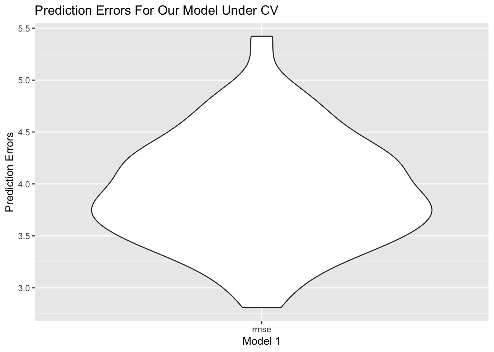
From the plot, RMSE is around 4.0, and spreads from 3.0 to 5.0, which is relatively a small and concentrated RMSE.
Prediction
The below graphs will show our prediction on Year 2016 data. Since we only have percent_w_in_lower_house data in year 2015, we will still use the same value for year 2016.
# predict on merged_data year 2016
data_2016 <-
read_csv("data/Merged_expectation.csv") %>%
filter(year == 2016) %>%
select(une_life, alcohol, measles, basic_water, income_group) %>%
bind_cols(data["percent_w_in_lower_house"]) %>%
drop_na() %>%
mutate(income_group = as.factor(income_group),
income_group = relevel(income_group, ref = "Low income"))
prediction_2016 <- predict(m1, newdata = data_2016)
# draw ggplot1
ggp1 <- prediction_2016 %>%
bind_cols(data_2016["une_life"]) %>%
ggplot(aes(x = une_life, y = prediction_2016)) +
geom_point() +
geom_abline(intercept = 0, slope = 1, color = "red") +
labs(
title = "Prediction V.S. Actual Life Expectancy On Year 2016 In Original Dataset",
x = "Actual Life Expectancy",
y = "Prediction"
)
# predict on imputed_data year 2016
data_2016_im <-
read_csv("data/Imputed_expectation.csv") %>%
filter(year == 2016) %>%
select(une_life, alcohol, measles, basic_water, income_group) %>%
bind_cols(data["percent_w_in_lower_house"]) %>%
drop_na() %>%
mutate(income_group = as.factor(income_group),
income_group = relevel(income_group, ref = "Low income"))
prediction_2016_im <- predict(m1, newdata = data_2016_im)
# draw ggplot2
ggp2 <- prediction_2016_im %>%
bind_cols(data_2016_im["une_life"]) %>%
ggplot(aes(x = une_life, y = prediction_2016_im)) +
geom_point() +
geom_abline(intercept = 0, slope = 1, color = "red") +
labs(
title = "Prediction V.S. Actual Life Expectancy On Year 2016 In Imputed Dataset",
x = "Actual Life Expectancy",
y = "Prediction"
)
ggp1 / ggp2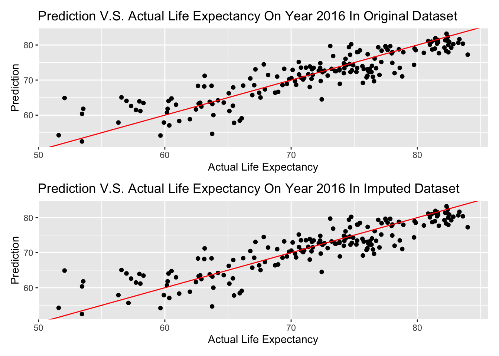
The graph above is shown that almost every prediction is in a + or - 5 years range, and there is no difference in imputed dataset and original dataset–possibly there is no data imputed on these variables of Year 2016.
If we consider a range in 3 years (+ or - 1.5 years) is a good prediction, lets see the percentage of predicted life expectancy in this range on Year 2016.
actual <- data_2016["une_life"]
percent <- sum(prediction_2016 >= actual - 1.5 & prediction_2016 <= actual + 1.5) / length(prediction_2016)
paste("The calculated result is ", round(percent, 3), ".")## [1] "The calculated result is 0.369 ."Therefore, if we consider a range in 3 years (+ or - 1.5 years) is a good prediction, 0.369 of predicted life expectancy will be in this range on Year 2016.
Clustering
Clustering Analysis is an unsupervised method that cluster the countries of interest into groups in a high dimensional vector space, based on the information of predictors values, i.e. alcohol consumption, bmi value, measle vaccinations and etc in our analysis. Different from prediction, we focus on how countries are correlated with each other based on their predictors and more importantly, the optimal number of groups we can partition into based on all predictors. Based on the optimal number of groups, we can essentially impute our model using k mean clustering method. In our data cleaning, we impute our data using k=4. Here, we check whether k=4 is a good choice based on k mean clustering. The following code runs over k groups where k is between 1 to 10.
merged_data =
read_csv("data/Merged_expectation.csv") %>%
filter(year == 2015) %>%
select(une_life,alcohol, bmi, measles, basic_water, che_gdp, une_gni, une_literacy, PM_value) %>%
drop_na()
X_var =
merged_data %>%
select(alcohol, bmi, measles, basic_water, che_gdp, une_gni, une_literacy, PM_value)
Y_var =
outcomes = merged_data %>%
select(une_life)
#Scale X variable
Scale_X = X_var %>%
na.omit() %>%
scale()
fviz_nbclust(Scale_X, kmeans, method = "silhouette") +
theme_bw()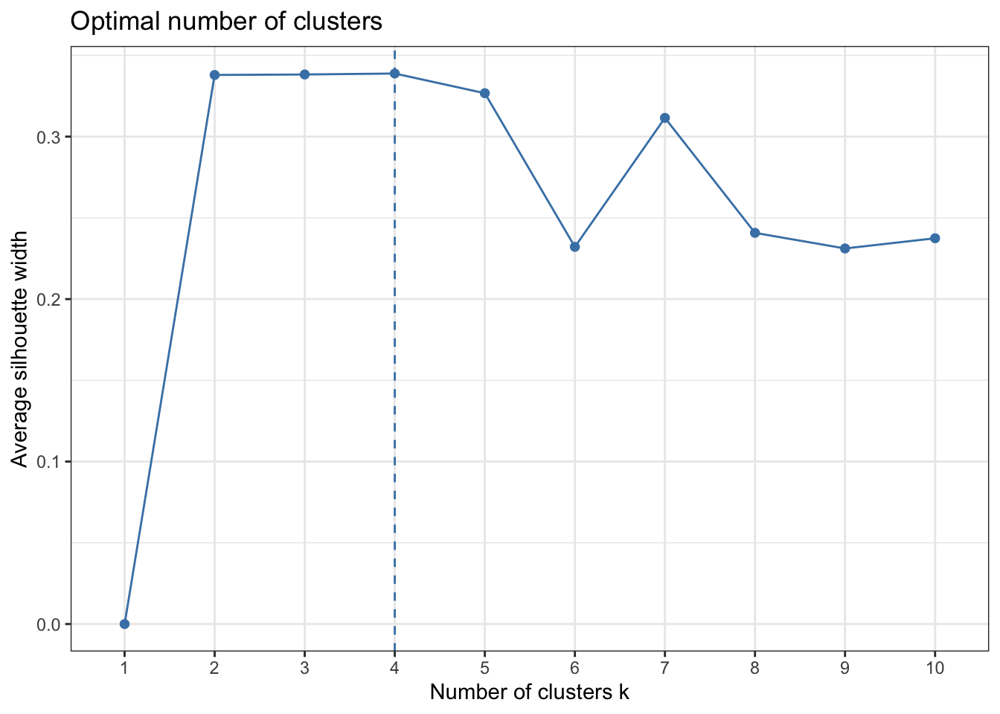
Here, we use silhouette method, which focus on how similar a point is within-cluster in comparison with other clusters paper. Based on the result, we discover that k =2,3 and 4 all has the highest sihouette width. k reaches its optimal value when k=4 and the optimal value coincide with our chosen k for k mean imputation value.
# get the kmean result and get the clusters
k_result =
kmeans(x = X_var, centers = 4)
#Create the overall dataframe with combined Xvar Yvar and cluster
Allvalues =
X_var %>%
broom::augment(k_result, .) %>%
cbind(Y_var,.)
# Plot predictor clusters against outcomes
ggplot(data = Allvalues, aes(x = une_gni, y = une_life, color = .cluster)) +
geom_point(size=3) +
labs(x = "GNI", y = "Life Expectancy", title = "Life expectancy vs GNI after clustered", color = "Cluster")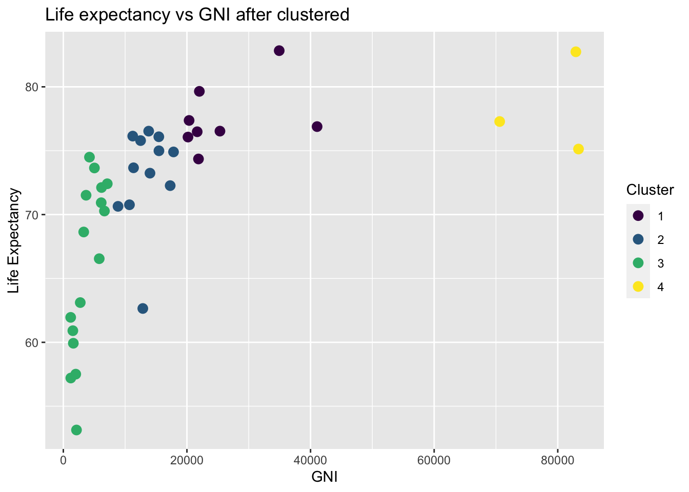
Although the algorithm is high dimensional, it is always better to visualize in a lower dimensional case when we only consider life expectancy and the predictor values. Here I choose GNI as an example. After clustering, we can clearly see that GNI with different clustered are clustered at different locations. This clustering may coincide with our previous classification with respect to different income group. High income group indicated by yellow color clearly has a relatively high life expectancy whereas low income group with low GNI value implied by the green group has a low life expectancy.
# Visualize cluster plot with reduction to two dimensions
fviz_cluster(k_result, data = X_var, palette = "Set2")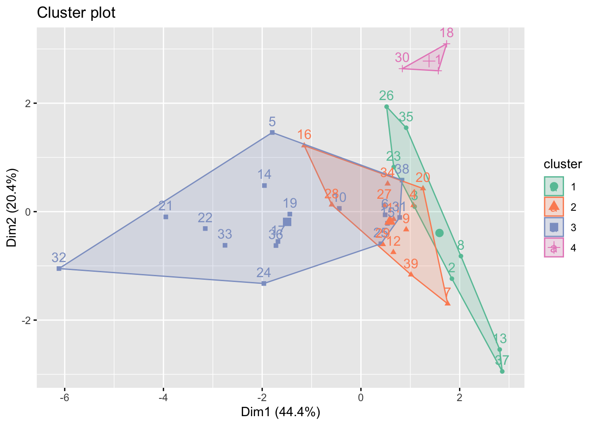
On the other hand, we plot based on the two highest variance explained dimension determined by principal component analysis (PCA). Most information are explained in the dimension 1 (44.4%) and dimension 2 (20.4%). As seen in the plot, only cluster 4 is clearly different from the other clusters. Cluster 1,2 and 3 are all intercorrelated with each other. This coincide with some of the time series plot in EDA part, i.e. number of doctors per 10,000 people and educational spend, which income groups overlapped with each other.
imputed_data =
read_csv("data/Imputed_expectation.csv") %>%
filter(year == 2015)
X_var_imp =
imputed_data %>%
select(alcohol, bmi, measles, basic_water, che_gdp, une_gni, une_literacy, PM_value)%>%
na.omit() %>%
scale()
Y_var_imp =
outcomes = imputed_data %>%
select(une_life)
# get the kmean result and get the clusters
k_result_imp =
kmeans(x = X_var_imp, centers = 4)
fviz_cluster(k_result_imp, data = X_var_imp, palette = "Set2")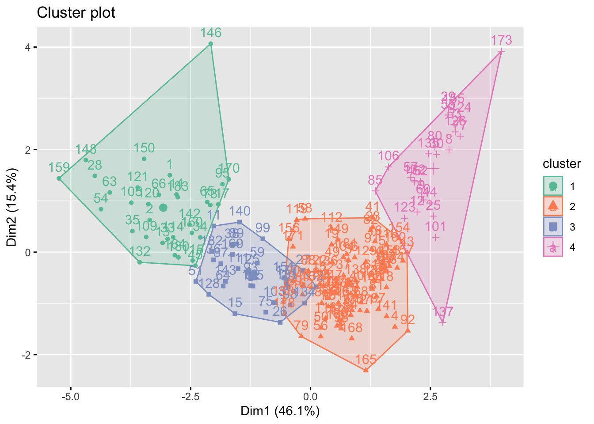
After imputation with k=4 mean clustering, the four groups are now separated from each other. This is reasonable because we impute with k=4 groups. Although the information may be biased, We can visualize that a high dimension 1 will lead to a high values in dimension 2. To our surprise, a low value in dimension 1 may also have a high value in dimension 2. This may because that some of the low income countries with low economic-related values may also have a high PM value.
Discussion
Findings and Conclusion
In our report, we first cleaned our data and utilized the k-means imputation to deal with missing value.
After exploratory analysis, we discovered a potential discrepancy between countries with different development status and income levels. We also compared the Pearson correlation with Distance correlation and discoverd little difference between linear and non-linear methods.
The statistical tests we performed tells us that the mean life expectancy in Europe and Americas are significantly different and they have the top 2 life expectancy. Africa has the lowest life expectancy. Average life span is significantly different among distinct income level groups and development status groups. People with higher income and from more developed countries tend to live longer.
From the regression, we concluded that the access to vaccines and basic clean water is really important, they have positive effects, while higher income and less alcohol will also lead to a longer life. Most importantly, we showed that the empowerment of women is significant to life expectancy, especially in middle income and upper income groups, which means increasing women’s voice in the country actually helps people live longer. Our model’s adjusted R^2 is 0.78.
By using clustering analysis on the data in 2015, we validated that k mean imputation with 4 groups is the optimal choice for imputation. We also showed the result of k mean clustering of the imputed data in the two dimensions with highest explained variance.
Challenges
In our major dataset, many variables have missing values over the years 2000 to 2016. We tried to impute them using a clustering method. However, for the variables that have more than 10% NAs, the validity of imputation is greatly reduced. So, in the end, the imputation effect is not ideal enough.
Additionally, we think it necessary to include more variables to cover the aspects of society, economics, environment, health, and so on. Human lifespan is the result of complex influence of multiple factors. The variables we have now are not comprehensive enough to build a better model and make more accurate predictions.
Limitation, Insights, Further Improvements
Our project focuses on a general level of countries in the world—for instance, the difference of life expectancy in developed countries and developing countries. While we gained generality of the idea, we lost specificity. We have less idea of countries within the same income level, especially lower income countries. At the same time, we did not explore the difference of life expectancy in states or regions within a country, like comparison of urban versus rural areas, which should be conducted in further studies.
To solve the imputation problem in our project, we could consider two methods—on one hand, we may research more advanced methods for imputation, on the other hand, we can also try to find other data sources to fill in the missing values.
To solve the insufficient variable problem, we propose that a deeper understanding of human longevity is needed to discover more relevant factors. We should do more research in this field and try to broaden our data sources.
The conclusion from the regression model that the empowerment of women is significant to life expectancy inspires us to further study the mechanism of how improving women’s status may expand a countrywide human’s lifespan. Moreover, the access to basic clean water is the most significant contributor to longer life expectancy–a further study could be introduced in order to explore the reasons behind the relationship of basic water and life expectancy.